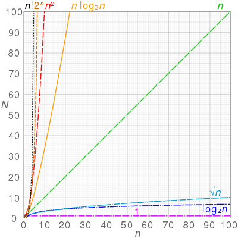
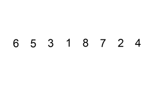
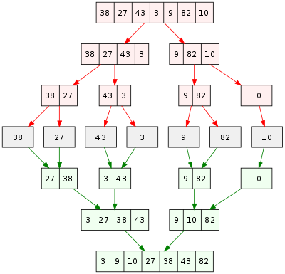
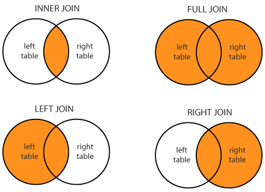
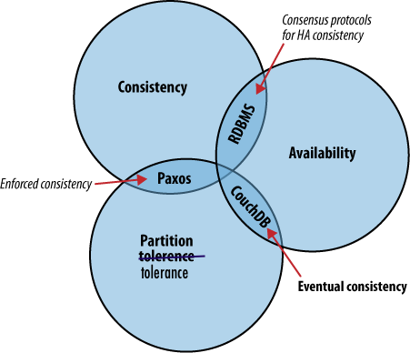

Job Search Lambda
Your Resume
Your resume is your personal summary sheet. Your resume is the thing that gets your foot in the door. So, there's a few things you should do (and not do) to make it as awesome as you are.
Make your name BIG.
Your name has to stand out from everything else, because you want it to be remembered. Making it the biggest thing on the page is the easiest thing you can do to make that possible. I've seen soooo many resumes where the name is at the top, but it's just bolded and centered and they expect that to be enough. It's not.
Remove the objective.
Nobody looks at the objective. Nobody. I personally spoke to a bunch of recruiters from various companies and they all said that they never look at them. Use that space to talk about projects you've done, activities you've done, etc.
Keep it to a single page.
Recruiters are looking for a short summary of you. They're reading several resumes a day, and if they see something longer than they typically read, they could pass over yours for something more concise! If you'd like to say more, put a link to a personal website or portfolio for someone to find it. A resume is a summary, not a tome.
Remove irrelevant information.
I know that lifeguarding in high school was a good gig that helped you
gain people skills and attention to detail. But you're in tech. That
doesn't matter as much to tech companies. Sorry, buddy. I still think
you're great with people.
When you're a first semester freshman, it's okay to have old high school
stuff on there, just because it's less likely that you have other things
to put on your resume. But as soon as you have a college GPA to work
with, a club or two, and some volunteer experiences to replace that, do
it.
Don't make it a scavenger hunt.
When an application reviewer (engineer, recruiter, or otherwise) is looking over your resume, don't make it difficult for them to understand who you are and what you know.
For example, if you have online profiles like GitHub, LinkedIn, Twitter, or even your own personal website, put it on your resume. Don't make them have to search long and hard for you online if they want to know more!
If you decide to put relevant coursework on your resume, please, don't just put course numbers. Nobody knows what that means. And nobody is going to go to your university's website to find out exactly what CS229 is. Put down the course titles instead!
And finally, put down your graduation date. So many students I've seen don't put it on there because they are hiding the fact that they're a freshman, or they're "technically a junior if you count the credits." That doesn't matter. Trust me. Just put down your graduation date so that the company knows how much experience you have, and how soon they can potentially pull you in for full-time.
Include only certain personal information.
Companies aren't allowed to ask about your religion, marital status, or race/ethnicity, so you shouldn't include that.
In terms of contact information: you don't need your mailing address.
That is a thing of the past. Just like my youth. Tech companies email,
and maybe call. That's all you need!
Some great things that you might also want to put on there are your
personal website (if you have one, which you should), your GitHub
profile (if you have one, which you should), and your LinkedIn (if you
have one, which you should).
CV Sample
Your cover letter is your written sales pitch. You've got a resume that summarizes everything. Now you have to write out a more complete, professional description of you and what you can offer a given company. Here's a sample cover letter to get you started:
Dear _________,
I hope your day is going well! My name is _________, and I'm a _________ at _________. I am very interested in working for _________ next _________. Your commitment to _________ and _________ that I saw on the website inspired me! The products you build and the values you stand for make _________ seem like an ideal workplace for me. A little about me, I [insert relevant work experience, extracurriculars, and projects here]. I think these experiences would make me a great candidate for you.
Please let me know if there's anything else you need from me. I look forward to hearing from you! I can be reached at _________ and _________
Best regards,
Now, remember, this is just a sample. You can write a cover letter in any format you'd like. But, you should be sure to include the following:
- Who - Who you are. Easy enough.
- Where - Where you're coming from.
- Why - Why you're interested in this company, and show that you researched them.
- What - What you can bring to the table.
- When - When you're available to start, and when they can contact you.
- How - How they can reach you.
Your Attitude
When you're internship/job hunting, it's very easy to feel down if you don't hear back from companies, an interview goes poorly, or you start comparing yourself to people. It's a tough field we're going into.
I want to emphasize something: You're brilliant. You're in this field for a reason. When your grades aren't awesome or someone gets something that you wanted, don't feel down on yourself. So many opportunities will come your way if you just keep working hard and refining your skills.
Mark Twain once said, "Comparison is the death of joy." When you start to compare your skills to others, it's hard to not feel as good about your own, or to get a little too competitive about your work. Work hard and don't let others get you down. It's remarkable how significantly that can improve both your work and your interviewing experience!
When you're talking to companies and recruiters at career fairs and hackathons and over the phone, be confident, not arrogant. Be grateful for the opportunity they're giving you, and smile! A great attitude will take you VERY far.
Your Skills
Obviously, your skills are what a company is buying from you when they hire you. So, honing in those skills and presenting them in an effective way is probably the most important thing in getting a gig.
Building Them
Chances are, if you've had a data structures and/or algorithms class, you're already going to do pretty well in the technical interviews. That is, if you can recall the information you learned.
Here's a checklist of things that you should probably be prepared to know in a technical interview:
- Data types
- Basic Bitwise Operations
- String Operations
- Arrays
-
Linked Lists
- Singly Linked
- Doubly Linked
- Circular Linked
- Queues
- Stacks
- Heaps
-
Trees
- Binary Trees
- Binary Search Trees
- Tries
- Self Balancing Trees
-
Traversing Trees
- Breadth First Search - BFS
- Depth First Search - DFS
- Preorder, Inorder, Postorder
-
Graphs
- Dijkstra's Algorithm / A* Search
-
Hash Maps
- Handling Collisions
-
Sorting algorithms
- Insertion
- Selection
- Merge
- Quick
- Time Complexities
This guide isn't for teaching you these skills. But there are several guides, problem sets, and practice systems out there that can help.
General Guides
- Sorting Algorithms
- Big-O Cheat Sheet
- Data Structures and Algorithms Overview
- Algorithm Implementations
- Top 10 Algorithms for coding interviews
Problem Sets
Online Judging Systems
Mock Interviews
- Pramp - free
- Careercup - paid
- Gainlo - paid
- Impact Interview - paid
Here's some books that might also be useful.
- Algorithms, 4th edition, by Robert Sedgewick and Kevin Wayne
- Introduction to Algorithms, 3rd Edition, by Thomas H. Cormen, Charles E. Leiserson, Ronald L. Rivest, and Clifford Stein (also referred as CLRS)
- Think Complexity, by Allen B. Downey
- Problems on Algorithms, 2nd edition, by Ian Parberry and William Gasarch
- Data Structures and Algorithms in Java
- Cracking the Coding Interview, 6th edition, by Gayle Laakmann McDowell
Typically, for an internship or your first job, questions won't get much more specific unless you're applying for a specific role. For example, if I wanted to be a mobile intern, I might be asked iOS/Android/Windows Phone specific questions, or if I wanted to be a web intern, I might be asked HTML/CSS/JavaScript questions, or if I wanted to be a backend intern, I might be asked about Django or Node or Ruby on Rails. That definitely depends on the company, and what you're both looking for.
Make sure you're able to implement and use the above data structures without the assistance of an IDE. Typically, onsite technical interviews involve coding on paper or a whiteboard, and phone/video interviews usually involve some kind of collaborative text editor. Yes, that means you won't have access to auto-complete, auto-compiling, or the internet to check for errors. So be ready for that!
Selling Them
When you're actively emailing and speaking with recruiters, they're going to ask you a lot of questions that are just checkboxes for what they're looking for in terms of skills.
If you've written anything in a language before, put it on your resume. A lot of companies have parsers that look for specific things that, again, will put a tick on those checkboxes before putting you through to the next round of review. Now, if you've only ever done "Hello, world!" in Python, don't say that you're a Python ninja or whatever. You don't want to be thrown into an interview that will only hurt your self-confidence. Speaking from experience. Trust me.
When a recruiter or engineer is asking you about a certain project you've done, or how you've used a particular language, be as specific as possible. Tell them exactly what you did on that particular project (or internship or what have you). Tell them how much you contributed, what languages you used, how long was the duration of development for that project, what was the outcome of the project, etc. etc.
For example, don't say, "I'm the webmaster for a club website. Next question." Okay, Dwight Schrute. Go back to your beet farm. Instead, say something more like this: "I developed and currently maintain the website for my university's computer science club. I built it from the ground up with HTML, CSS, JavaScript, and jQuery on the front-end. It's a static site, so a backend wasn't needed. The website's main function is to promote the club and give members crucial updates about meetings and events, and I update it regularly via a Python script I wrote." Oh my, you enchanting software engineer, you. Let me hire you.
When you're talking to companies about specific things you've done, make sure they know:
- What? - What? - What did you make? What does it do? What impact has it made? What was the hardest part? What could you have done better?
- Why? - Why did you make it? Was it for a hackathon, a school project, an open source contribution, or something else?
- How? - With which technologies did you make this? Did you use a specific API? What parts of it did you work on?
- When? - Did you do this recently or are you still living off of when you peaked in 10th grade?
- Who? - Did you work on this with anyone? Who did what? Who is this for?
MY Interests / Resources:
- Ansible
- Awesome Lists
- CI/CD
- Data Science
- Docker
- DynamoDB
- Elasticsearch
- Environment Setups
- Epic Github Repos
- Golang
- Grafana
- Great Blogs
- Knowledge Base
- Kubernetes
- Machine Learning
- Monitoring
- MongoDB
- Programming
- Queues
- Self Hosting
- Serverless
- Sysadmin References
- VPN
- Web Frameworks
Ansible
Awesome Lists
Epic Github Repos
Authentication
Data Science
Grafana
Docker
Deploy Stacks to your Swarm: :whale: :heart:
Logging:
Metrics:
- StefanProdan - Prometheus, Grafana, cAdvisor, Node Exporter and Alert Manager
- Mlabouardy - Telegraf, InfluxDB, Chronograf, Kapacitor & Slack
Awesome Docker Repos
RaspberryPi ARM Images:
- arm32v6/alpine:edge
- arm32v6/golang:alpine
- arm32v6/haproxy:alpine
- arm32v6/node:alpine
- arm32v6/openjdk:alpine
- arm32v6/postgres:alpine
- arm32v6/python:2.7-alpine3.6
- arm32v6/python:3.6-alpine3.6
- arm32v6/rabbitmq:alpine
- arm32v6/redis:alpine
- arm32v6/ruby:alpine3.6
- arm32v6/tomcat:alpine
- arm32v6/traefik:latest
- arm32v7/debian:lates
- hypriot/rpi-redis
- jixer/rpi-mongo
- alexellis/armhf
- zeiot: rpi-prometheus stack
- larmog
- Rpi MongoDB
- ARM Swarm
Docker Image Repositories
- Docker Hub: arm32v6
- Docker Hub: armv7
- Github: Luvres Armhf
- Apache/PHP7 on Alpine
- Tomcat on Alpine
- Nginx (jwilder)
- Alpine Images (smebberson)
- SameerSbn
- Linuxserver.io
- Apache-PHP5
- Apache-PHP-Email
Docker-Awesome-Lists
Docker Blogs:
- Whoami used in Traefik Docs
- Sqlite with Docker
- Rails with Postgres and Redis
- Async Tasks with Flask and Redis
- Flask and Postgres
- Elastic Beats on RaspberryPi
Docker Storage
OpenFaas:
Prometheus / Grafana on Swarm:
- StefanProdan - SwarmProm
- Monitoring with Prometheus
- UschtWill - Prometheus Grafana Elastalert
- Chmod-Org Promethus with Blackbox
- Finestructure: Prometheus Tutorial
Logging / Kibana / Beats
Libraries
Frameworks
Continious Integration:
Circle-CI
Concourse
- Setup Concourse Environment with Docker
- Getting Started with Concourse and Docker
- Concourse Gated Pipelines
- Concourse Boilerplate
Jenkins
- Modess - PHP with Jenkins
- CI/CD Nodejs Tutorial with Jenkins
- CI/CD Nodejs Tutorial with Jenkins @medium
- Epic CICD workflow with Jenkins, Gitlab, Sonar, Nexus
SwarmCi
Travis-CI
- Getting Started with Travis-CI (Original Docs)
- Getting Started with Travis-CI (dwyl - nodejs)
- Blog Site with Travis-CI (Python)
- Build Tests with Python on Travis-CI
- Moving app with Travis-CI
LambCI
DynamoDB
DynamoDB Docs
DynamoDB Best Practices
DynamoDB General Info
Elasticsearch
Elasticsearch Documentation
- General Recommendation
- How Many Shards in my Cluster
- Managing Time-Based Indices Efficiently
- Elasticsearch Best Practices (Bonsai.io)
- AWS ES - Scaling up my Domain
Elasticsearch Cheetsheets:
Elasticsearch Blogs
- Maximize Elasticsearch Indexing Performance
- Autoritative Guide to ES Performance Tuning
- Full text Search Queries
- Query Elasticsearch
Elasticsearch Tools
Environment Setups:
Knowledge Base
KB HTTPS
Kubernetes
- Awesome Kubernetes
- Kubernetes Cheatsheet
- Getting Started: Python application on Kubernetes
- Kubernetes Deployments: The Ultimate Guide
- Prometheus Monitoring Stack with Kubernetes on DO
- Traefik as an Ingress Controller on Minikube
- Traefik Ingress with Kubernetes
- Manual Connect your Kubernetes from Outside
- HTTPS Letsencrypt on k3s
- Kubernetes: Nodeport vs Loadbalancer
- Prometheus Monitoring Pipeline on Kubernetes
- Building a Kubernetes CI/CD Pipeline with Rancher
- Building a Kubernetes CI/CD Pipeline with AWS
- Gitea and Drone CI/CD on k3s
- Serverless with Kubernetes using OpenFaaS and Linkerd2
- Managing Kubernetes with kubectl
- OpenFaas Workshop on k3s
- Kubernetes Hands-On Lab with collabnix
- Create ReadWrite Persistent Volumes on Kubernetes
- Kubernetes Clusters with k3s and multipass
Kubernetes Storage
Golang
Great Blogs
- Exratione.com
- Joelabrahamsson.com
- Benjamin Cane
- Michael Herman
- Charles Leifer
- Labouardy
- Mark's Tech Blog
Linuxkit:
Logging Stacks
Machine Learning:
Metrics:
MongoDB:
- Setup MongoDB Cluster
- MongoDB Scripts
- MongoDB Monitoring Tools
- Roles with MongoDB
- Queries: Guru99
- Queries: Exploratory
- Queries: Tutorialspoint
- Queries: MongoDB Cheatsheet
Monitoring
- Docker Swarm Monitoring Stack: Telegraf, InfluxDB, Chronograf, Kapacitor github source
- Docker Swarm Monitoring Stack: Prometheus, Grafana, cAdvisor, Node Exporter github source
- Prometheus Grafana Docker
- Prometheus Blog Seros
- Memcached Monitoring
- Nagios with Nagios Graph
- Slack Alerts with Prometheus
- Local Prometheus Stack
- Docker Swarm Promethus Setup #1
- Docker Swarm Promethus Setup #2
- Docker Swarm Promethus Setup #3 (Blackbox)
- Uptime (fzaninotto)
Monitoring and Alerting
Monitoring as Statuspages
Programming
Golang:
Java:
Python
Ruby:
- Learn Ruby: Learn Ruby the Hard Way
- Learn Ruby: Ruby for Beginners
- Learn Ruby: Launch School
- Learn Ruby: Arrays
- Install Ruby Environment on Mac
Ruby on Rails:
Queues
Sysadmin References:
- Sysadmin Command References
- Linux Performance Observability Tools
- Troubleshooting High IO Wait
- IO Monitoring in Linux
- IOStat and VMStat for Performance Monitoring
- Debugging Heavy Load
Self Hosting
Email Server Setups
- Extratione: Postfix Dovecot MySQL Virtual Users Postfixadmin
- Extratione: Postfix Dovecot MySQL Virtual Users Postfixadmin (Ubuntu 18)
- Linuxsize: Postfix Dovecot MySQL Virtual Users Postfixadmin
- Howtoforge: Postfix, MySQL, Dovecto, Dspam
- Linuxsize: VirtualUsers, MySQL, Postfix, Dovecot
Mailscanner Server Setups
Financial
Self Hosting Frameworks:
Serverless
VPN:
VPN-Howto:
- Ubuntu OpenVPN Script
- Ubuntu IPSec Script
- DO - Setup OpenVPN on Ubuntu
- Elasticshosts - IPSec VPN
- PPTP/IPSec/OpenVPN Auto Install
Website Templates
Resume Templates
Web Frameworks
Python Flask:
- Python Flask Upload Example
- Awesome Flask - humiaozuzu
- Awesome Flask Apps - Greyli
- Flask over HTTPS (MG)
- Flask Advanced Patterns
- Flask MVC Boilerplate
Programming Language Resources
-
C
- ANSI C Cheat Sheet
- K&R C book (ANSI C)
- Make, Clang (video)
- GDB:
- Let us C
-
C++
- C++ Cheat Sheet
- STL Cheat Sheet
- basics
- pointers
- class and object
- functions
- references
- templates
- compilation
- scope & linkage
- namespaces
- OOP
- STL
- functors
- C++ at Google (video)
-
Google C++ Style Guide
- Google uses clang-format (there is a command line "style" argument: -style=google)
- Efficiency with Algorithms, Performance with Data Structures (video)
- Review of C++ concepts (video)
- Let us C++
- C++ Primer
-
Python
- Python Cheat Sheet
- Python in One Video
- Series on 3.4 (video)
- Statistics for Hackers (video)
- Faster Python (video)
- CPython Walk (video)
- 10 Tips for Pythonic Code (video)
- Beyond PEP 8 -- Best practices for beautiful intelligible code (video)
- Automate the Boring Stuff with Python
- Coding Interview Essentials
- Data Structures And Algorithms in Python
- Java
- Go
- HTML
- CSS
- Javascript
- Other Language 1
- Other Language 2
- etc
Leetcode/find-work.md
Find work programming

Curated list of websites and resources to find work programming
Please read contribution guidelines before contributing.
Prepare
- Coding Interview University - Complete computer science study plan to become a software engineer.
- Free self taught CS education - Path to a free self-taught education in Computer Science.
- Everything you need to get the job
- LeetCode problems - Many problems geared for solving actual programming interview questions.
- Learn Anything - Best paths for learning any topic including CS, programming and algorithms.
- Algorithms - Solved algorithms and data structures problems in many languages.
- 30 Seconds of Interviews
Make CV
- Awesome CV - Great LaTeX template.
- Deedy Resume
Find work
-
HN: Who is Hiring
- Search & filter through monthly
HN: Who is hiring?postings. - Otta - Discover the most relevant roles for you at all of London's best startups.
- findwork.dev - Jobs aggregator which collects data from Hacker News, Github, Stackoverflow.
- Who is Hiring
- Angel List
- LinkedIn Jobs
- Stack Overflow Jobs
- Glassdoor
- Hired
- Unicorn Hunt
- Relocate me
- Landing Jobs
- Remote OK
- Indeed
- Loom - Connecting companies and top freelancers.
- Product Hunt Jobs
- Remote - Remote jobs for anyone, anywhere.
- Go Remote
- We Work Remotely
- Hiring Without Whiteboards
- Key Values - Find engineering teams that share your values.
- Future Jobs - The best machine learning, AI, and data science jobs, in one place.
- CalmJobs - Work with companies who values work-life balance.
- Xpo Jobs
- FOSS Jobs - Free & Open Source Jobs.
- co-hire - Simple way for technical people to speak directly with technology companies.
- EntryLvl - Browse through entry level job opportunities and find your match. (HN)
- Y Combinator's list of most active hiring companies on Work at a Startup
- NoiceJobs: Senior Remote Jobs (HN)
- Remoteleaf - Receive hand-picked remote jobs delivered straight to your inbox.
Find work by technology
iOS
- Swift Jobs
- Xcode Jobs
- iOS Jobs
- iOS Indeed Jobs
- SO iOS Jobs
- LinkedIn iOS Jobs
- iOS Dev Jobs - Has newsletter too.
Go
React
Python
- Py Jobs - Search and post Python jobs all over the globe.
- Free Python Job Board
Rust
- Companies using Rust
- This week in Rust - Weekly Rust newsletter that has Jobs section.
Haskell
- Haskell companies - Curated list of companies using Haskell in industry.
Freelancing
- The Remote Freelancer - List of community-curated resources to find topical remote freelance & contract work.
Related
- CS career questions EU wiki
- Few notes about web developer's interviews
- Finding work wiki
- Remote work wiki
- Search the last 'Who is hiring?' thread
Leetcode/README.md
Tech Interview
Asymptotic Notation
Definition:
Asymptotic Notation is the hardware independent notation used to tell the time and space complexity of an algorithm. Meaning it's a standardized way of measuring how much memory an algorithm uses or how long it runs for given an input.
Complexities
The following are the Asymptotic rates of growth from best to worst:
-
constant growth -
O(1)Runtime is constant and does not grow withn -
logarithmic growth –
O(log n)Runtime grows logarithmically in proportion ton -
linear growth –
O(n)Runtime grows directly in proportion ton -
superlinear growth –
O(n log n)Runtime grows in proportion and logarithmically ton -
polynomial growth –
O(n^c)Runtime grows quicker than previous all based onn -
exponential growth –
O(c^n)Runtime grows even faster than polynomial growth based onn -
factorial growth –
O(n!)Runtime grows the fastest and becomes quickly unusable for even
small values of n
(source: Soumyadeep Debnath,
Analysis of Algorithms | Big-O analysis)
Visualized below; the x-axis representing input size and the y-axis
representing complexity:

(source: Wikipedia, Computational Complexity of Mathematical Operations)
Big-O notation
Big-O refers to the upper bound of time or space complexity of an algorithm, meaning it worst case runtime scenario. An easy way to think of it is that runtime could be better than Big-O but it will never be worse.
Big-Ω (Big-Omega) notation
Big-Omega refers to the lower bound of time or space complexity of an algorithm, meaning it is the best runtime scenario. Or runtime could worse than Big-Omega, but it will never be better.
Big-θ (Big-Theta) notation
Big-Theta refers to the tight bound of time or space complexity of an
algorithm. Another way to think of it is the intersection of Big-O and
Big-Omega, or more simply runtime is guaranteed to be a given
complexity, such as n log n .
What you need to know
- Big-O and Big-Theta are the most common and helpful notations
- Big-O does not mean Worst Case Scenario, Big-Theta does not mean average case, and Big-Omega does not mean Best Case Scenario. They only connote the algorithm's performance for a particular scenario, and all three can be used for any scenario.
- Worst Case means given an unideal input, Average Case means given a typical input, Best case means a ideal input. Ex. Worst case means given an input the algorithm performs particularly bad, or best case an already sorted array for a sorting algorithm.
- Best Case and Big Omega are generally not helpful since Best Cases are rare in the real world and lower bound might be very different than an upper bound.
- Big-O isn't everything. On paper merge sort is faster than quick sort, but in practice quick sort is superior.
Data Structures
Array
Definition
- Stores data elements based on an sequential, most commonly 0 based, index.
- Based on tuples from set theory.
- They are one of the oldest, most commonly used data structures.
What you need to know
- Optimal for indexing; bad at searching, inserting, and deleting (except at the end).
-
Linear arrays, or one dimensional arrays, are the
most basic.
- Are static in size, meaning that they are declared with a fixed size.
-
Dynamic arrays are like one dimensional arrays, but
have reserved space for additional elements.
- If a dynamic array is full, it copies its contents to a larger array.
- Multi dimensional arrays nested arrays that allow for multiple dimensions such as an array of arrays providing a 2 dimensional spacial representation via x, y coordinates.
Time Complexity
-
Indexing: Linear array:
O(1), Dynamic array:O(1) -
Search: Linear array:
O(n), Dynamic array:O(n) -
Optimized Search: Linear array:
O(log n), Dynamic array:O(log n) - Insertion: Linear array: n/a, Dynamic array:
O(n)
Linked List
Definition
-
Stores data with nodes that point to other nodes.
- Nodes, at its most basic it has one datum and one reference (another node).
- A linked list chains nodes together by pointing one node's reference towards another node.
What you need to know
- Designed to optimize insertion and deletion, slow at indexing and searching.
- Doubly linked list has nodes that also reference the previous node.
- Circularly linked list is simple linked list whose tail, the last node, references the head, the first node.
-
Stack, commonly implemented with linked lists but can
be made from arrays too.
- Stacks are last in, first out (LIFO) data structures.
- Made with a linked list by having the head be the only place for insertion and removal.
-
Queues, too can be implemented with a linked list or
an array.
- Queues are a first in, first out (FIFO) data structure.
- Made with a doubly linked list that only removes from head and adds to tail.
Time Complexity
- Indexing: Linked Lists:
O(n) - Search: Linked Lists:
O(n) - Optimized Search: Linked Lists:
O(n) - Append: Linked Lists:
O(1) - Prepend: Linked Lists:
O(1) - Insertion: Linked Lists:
O(n)
Hash Table or Hash Map
Definition
- Stores data with key value pairs.
-
Hash functions accept a key and return an output
unique only to that specific key.
- This is known as hashing, which is the concept that an input and an output have a one-to-one correspondence to map information.
- Hash functions return a unique address in memory for that data.
What you need to know
- Designed to optimize searching, insertion, and deletion.
-
Hash collisions are when a hash function returns the
same output for two distinct inputs.
- All hash functions have this problem.
- This is often accommodated for by having the hash tables be very large.
- Hashes are important for associative arrays and database indexing.
Time Complexity
- Indexing: Hash Tables:
O(1) - Search: Hash Tables:
O(1) - Insertion: Hash Tables:
O(1)
Binary Tree
Definition
-
Is a tree like data structure where every node has at most two
children.
- There is one left and right child node.
What you need to know
- Designed to optimize searching and sorting.
- A degenerate tree is an unbalanced tree, which if entirely one-sided, is essentially a linked list.
- They are comparably simple to implement than other data structures.
-
Used to make binary search trees.
- A binary tree that uses comparable keys to assign which direction a child is.
- Left child has a key smaller than its parent node.
- Right child has a key greater than its parent node.
- There can be no duplicate node.
- Because of the above it is more likely to be used as a data structure than a binary tree.
Time Complexity
- Indexing: Binary Search Tree:
O(log n) - Search: Binary Search Tree:
O(log n) - Insertion: Binary Search Tree:
O(log n)
Algorithms
Algorithm Basics
Recursive Algorithms
Definition
-
An algorithm that calls itself in its definition.
- Recursive case a conditional statement that is used to trigger the recursion.
- Base case a conditional statement that is used to break the recursion.
What you need to know
-
Stack level too deep and
stack overflow.
- If you've seen either of these from a recursive algorithm, you messed up.
- It means that your base case was never triggered because it was faulty or the problem was so massive you ran out of alloted memory.
- Knowing whether or not you will reach a base case is integral to correctly using recursion.
- Often used in Depth First Search
Iterative Algorithms
Definition
-
An algorithm that is called repeatedly but for a finite number of
times, each time being a single iteration.
- Often used to move incrementally through a data set.
What you need to know
- Generally you will see iteration as loops, for, while, and until statements.
- Think of iteration as moving one at a time through a set.
- Often used to move through an array.
Recursion Vs. Iteration
-
The differences between recursion and iteration can be confusing to
distinguish since both can be used to implement the other. But know
that,
- Recursion is, usually, more expressive and easier to implement.
- Iteration uses less memory.
- Functional languages tend to use recursion. (i.e. Haskell)
- Imperative languages tend to use iteration. (i.e. Ruby)
- Check out this Stack Overflow post for more info.
Pseudo Code of Moving Through an Array
| Recursion | Iteration |
| ---------------------------- | ----------------------------- |
| recursive method (array, n) | iterative method (array) |
| if array[n] is not nil | for n from 0 to size of array |
| print array[n] | print(array[n]) |
| recursive method(array, n+1) |
| else |
| exit loop |
Greedy Algorithms
Definition
- An algorithm that, while executing, selects only the information that meets a certain criteria.
-
The general five components, taken from
Wikipedia:
- A candidate set, from which a solution is created.
- A selection function, which chooses the best candidate to be added to the solution.
- A feasibility function, that is used to determine if a candidate can be used to contribute to a solution.
- An objective function, which assigns a value to a solution, or a partial solution.
- A solution function, which will indicate when we have discovered a complete solution.
What you need to know
- Used to find the expedient, though non-optimal, solution for a given problem.
- Generally used on sets of data where only a small proportion of the information evaluated meets the desired result.
- Often a greedy algorithm can help reduce the Big O of an algorithm.
Pseudo Code of a Greedy Algorithm to Find Largest Difference of any Two Numbers in an Array.
greedy algorithm (array)
let largest difference = 0
let new difference = find next difference (array[n], array[n+1])
largest difference = new difference if new difference is > largest difference
repeat above two steps until all differences have been found
return largest difference
This algorithm never needed to compare all the differences to one another, saving it an entire iteration.
Search Algorithms
Breadth First Search
Definition
-
An algorithm that searches a tree (or graph) by searching levels of
the tree first, starting at the root.
- It finds every node on the same level, most often moving left to right.
- While doing this it tracks the children nodes of the nodes on the current level.
- When finished examining a level it moves to the left most node on the next level.
- The bottom-right most node is evaluated last (the node that is deepest and is farthest right of it's level).
What you need to know
- Optimal for searching a tree that is wider than it is deep.
-
Uses a queue to store information about the tree while it traverses a
tree.
- Because it uses a queue it is more memory intensive than depth first search.
- The queue uses more memory because it needs to stores pointers
Time Complexity
- Search: Breadth First Search: O(V + E)
- E is number of edges
- V is number of vertices
Depth First Search
Definition
-
An algorithm that searches a tree (or graph) by searching depth of the
tree first, starting at the root.
- It traverses left down a tree until it cannot go further.
- Once it reaches the end of a branch it traverses back up trying the right child of nodes on that branch, and if possible left from the right children.
- When finished examining a branch it moves to the node right of the root then tries to go left on all it's children until it reaches the bottom.
- The right most node is evaluated last (the node that is right of all it's ancestors).
What you need to know
- Optimal for searching a tree that is deeper than it is wide.
-
Uses a stack to push nodes onto.
- Because a stack is LIFO it does not need to keep track of the nodes pointers and is therefore less memory intensive than breadth first search.
- Once it cannot go further left it begins evaluating the stack.
Time Complexity
- Search: Depth First Search: O(|E| + |V|)
- E is number of edges
- V is number of vertices
Breadth First Search Vs. Depth First Search
-
The simple answer to this question is that it depends on the size and
shape of the tree.
- For wide, shallow trees use Breadth First Search
- For deep, narrow trees use Depth First Search
Nuances
- Because BFS uses queues to store information about the nodes and its children, it could use more memory than is available on your computer. (But you probably won't have to worry about this.)
- If using a DFS on a tree that is very deep you might go unnecessarily deep in the search. See xkcd for more information.
- Breadth First Search tends to be a looping algorithm.
- Depth First Search tends to be a recursive algorithm.
Sorting Algorithms
Selection Sort
Definition
-
A comparison based sorting algorithm.
- Starts with the cursor on the left, iterating left to right
-
Compares the left side to the right, looking for the smallest
known item
- If the left is smaller than the item to the right it continues iterating
- If the left is bigger than the item to the right, the item on the right becomes the known smallest number
- Once it has checked all items, it moves the known smallest to the cursor and advances the cursor to the right and starts over
- As the algorithm processes the data set, it builds a fully sorted left side of the data until the entire data set is sorted
- Changes the array in place.
What you need to know
- Inefficient for large data sets.
- Very simple to implement.
Time Complexity
- Best Case Sort: Merge Sort:
O(n^2) - Average Case Sort: Merge Sort:
O(n^2) - Worst Case Sort: Merge Sort:
O(n^2)
Space Complexity
- Worst Case:
O(1)
Visualization

(source: Wikipedia, Insertion Sort)
Insertion Sort
Definition
-
A comparison based sorting algorithm.
- Iterates left to right comparing the current cursor to the previous item.
- If the cursor is smaller than the item on the left it swaps positions and the cursor compares itself again to the left hand side until it is put in its sorted position.
- As the algorithm processes the data set, the left side becomes increasingly sorted until it is fully sorted.
- Changes the array in place.
What you need to know
- Inefficient for large data sets, but can be faster for than other algorithms for small ones.
-
Although it has an
O(n^2), in practice it slightly less since its comparison scheme only requires checking place if its smaller than its neighbor.
Time Complexity
- Best Case:
O(n) - Average Case:
O(n^2) - Worst Case:
O(n^2)
Space Complexity
- Worst Case:
O(n)
Visualization

(source: Wikipedia, Insertion Sort)
Merge Sort
Definition
-
A divide and conquer algorithm.
- Recursively divides entire array by half into subsets until the subset is one, the base case.
- Once the base case is reached results are returned and sorted ascending left to right.
- Recursive calls are returned and the sorts double in size until the entire array is sorted.
What you need to know
- This is one of the fundamental sorting algorithms.
- Know that it divides all the data into as small possible sets then compares them.
Time Complexity
- Worst Case:
O(n log n) - Average Case:
O(n log n) - Best Case:
O(n)
Space Complexity
- Worst Case:
O(1)
Visualization

(source: Wikipedia, Merge Sort)
Quicksort
Definition
-
A divide and conquer algorithm
- Partitions entire data set in half by selecting a random pivot element and putting all smaller elements to the left of the element and larger ones to the right.
- It repeats this process on the left side until it is comparing only two elements at which point the left side is sorted.
- When the left side is finished sorting it performs the same operation on the right side.
- Computer architecture favors the quicksort process.
- Changes the array in place.
What you need to know
- While it has the same Big O as (or worse in some cases) many other sorting algorithms it is often faster in practice than many other sorting algorithms, such as merge sort.
Time Complexity
- Worst Case:
O(n^2) - Average Case:
O(n log n) - Best Case:
O(n log n)
Space Complexity
- Worst Case:
O(log n)
Visualization

(source: Wikipedia, Quicksort)
Merge Sort Vs. Quicksort
- Quicksort is likely faster in practice, but merge sort is faster on paper.
- Merge Sort divides the set into the smallest possible groups immediately then reconstructs the incrementally as it sorts the groupings.
- Quicksort continually partitions the data set by a pivot, until the set is recursively sorted.
Additional Resources
Khan Academy's Algorithm Course
What is ARIA and when should you use it?
Answer
ARIA stands for "Accessible Rich Internet Applications", and is a
technical specification created by the World Wide Web Consortium (W3C).
Better known as WAI-ARIA, it provides additional HTML attributes in the
development of web applications to offer people who use assistive
technologies (AT) a more robust and interoperable experience with
dynamic components. By providing the component's role, name, and state,
AT users can better understand how to interact with the component.
WAI-ARIA should only be used when an HTML element equivalent is not
available or lacks full browser or AT support. WAI-ARIA's semantic
markup coupled with JavaScript works to provide an understandable and
interactive experience for people who use AT.
An example using ARIA:
<div role="combobox" aria-expanded="false" aria-owns="ex1-grid" aria-haspopup="grid" id="ex1-combobox"> ... </div>
Credit: W3C's ARIA 1.1 Combobox with Grid Popup Example
Don't forget:
- Accessible Rich Internet Applications
- Benefits people who use assistive technologies (AT)
- Provides role, name, and state
- Semantic HTML coupled with JavaScript
Additional links
What is the minimum recommended ratio of contrast between foreground text and background to comply with WCAG? Why does this matter?
Answer
4.5:1 is the calculated contrast ratio between foreground text and background that is recommended by the Web Content Accessibiity Guidelines (WCAG) success criteria (SC) 1.4.3: Contrast (Minimum). This SC was written by the World Wide Web Consortium (W3C) to ensure that people with low vision or color deficiencies are able to read (perceive) important content on a web page. It goes beyond color choices to ensure text stands out on the background it's placed on.
Don't forget:
- At least 4.5:1 contrast ratio between foreground text and background
- Benefits people with low vision or color deficiencies
Additional links
What are some of the tools available to test the accessibility of a website or web application?
Answer
There are multiple tools that can help you to find for accessibility
issues in your website or application.
Check for issues in your website:
- Lighthouse from Google, it provides an option for accessibility testing, it will check for the compliance of different accessibility standards and give you an score with details on the different issues
- Axe Coconut from DequeLabs, it is a Chrome extension that adds a tab in the Developer tools, it will check for accessibility issues and it will classify them by severity and suggest possible solutions
Check for issues in your code: * Jest Axe, you can add unit tests for
accessibility * React Axe, test your React application with the axe-core
accessibility testing library. Results will show in the Chrome DevTools
console. * eslint-plugin-jsx-a11y, pairing this plugin with an editor
lint plugin, you can bake accessibility standards into your application
in real-time.
Check for individual issues: * Color Contrast checkers * Use a screen
reader * Use only keyboard to navigate your site
Don't forget:
- None of the tools will replace manual testing
- Mention of different ways to test accessibility
Additional links
What is the Accessibility Tree?
Answer
The Accessibility Tree is a structure produced by the browser's Accessibility APIs which provides accessibility information to assistive technologies such as screen readers. It runs parallel to the DOM and is similar to the DOM API, but with much fewer nodes, because a lot of that information is only useful for visual presentation. By writing semantic HTML we can take advantage of this process in creating an accessible experience for our users.
Don't forget:
- Tree structure exposing information to assistive technologies
- Runs parallel to the DOM
- Semantic HTML is essential in creating accessible experiences
Additional links
What is the purpose of the alt attribute on images?
Answer
The alt attribute provides alternative information for an
image if a user cannot view it. The alt attribute should be
used to describe any images except those which only serve a decorative
purpose, in which case it should be left empty.
Don't forget:
-
Decorative images should have an empty
altattribute. -
Web crawlers use
alttags to understand image content, so they are considered important for Search Engine Optimization (SEO). -
Put the
.at the end ofalttag to improve accessibility.
Additional links
What are defer and async attributes on a
<script> tag?
Answer
If neither attribute is present, the script is downloaded and executed
synchronously, and will halt parsing of the document until it has
finished executing (default behavior). Scripts are downloaded and
executed in the order they are encountered.
The defer attribute downloads the script while the document
is still parsing but waits until the document has finished parsing
before executing it, equivalent to executing inside a
DOMContentLoaded event listener. defer scripts
will execute in order.
The async attribute downloads the script during parsing the
document but will pause the parser to execute the script before it has
fully finished parsing. async scripts will not necessarily
execute in order.
Note: both attributes must only be used if the script has a
src attribute (i.e. not an inline script).
<script src="myscript.js"></script>
<script src="myscript.js" defer></script>
<script src="myscript.js" async></script>
Don't forget:
-
Placing a
deferscript in the<head>allows the browser to download the script while the page is still parsing, and is therefore a better option than placing the script before the end of the body. - If the scripts rely on each other, use
defer. - If the script is independent, use
async. -
Use
deferif the DOM must be ready and the contents are not placed within aDOMContentLoadedlistener.
Additional links
What is an async function?
async function foo() { ... }
Answer
An async function is a function that allows you to pause
the function's execution while it waits for ( await s) a
promise to resolve. It's an abstraction on top of the Promise API that
makes asynchronous operations look like they're synchronous.
async functions automatically return a Promise object.
Whatever you return from the async function
will be the promise's resolution. If instead you
throw from the body of an async function, that
will be how your async function rejects the promise it
returns.
Most importantly, async functions are able to use the
await keyword in their function body, which
pauses the function until the operation after the
await completes, and allows it to return that operation's
result to a variable synchronously.
// Normal promises in regular function: function foo() { promiseCall() .then(result => { // do something with the result }) } // async functions async function foo() { const result = await promiseCall() // do something with the result }
Don't forget:
-
asyncfunctions are just syntactic sugar on top of Promises. - They make asynchronous operations look like synchronous operations in your function.
-
They implicitly return a promise which resolves to whatever your
asyncfunction returns, and reject to whatever yourasyncfunctionthrows.
Additional links
Create a function batches that returns the maximum number
of whole batches that can be cooked from a recipe.
/** It accepts two objects as arguments: the first object is the recipe for the food, while the second object is the available ingredients. Each ingredient's value is a number representing how many units there are. `batches(recipe, available)` */ // 0 batches can be made batches({ milk: 100, butter: 50, flour: 5 }, { milk: 132, butter: 48, flour: 51 }) batches({ milk: 100, flour: 4, sugar: 10, butter: 5 }, { milk: 1288, flour: 9, sugar: 95 }) // 1 batch can be made batches({ milk: 100, butter: 50, cheese: 10 }, { milk: 198, butter: 52, cheese: 10 }) // 2 batches can be made batches({ milk: 2, sugar: 40, butter: 20 }, { milk: 5, sugar: 120, butter: 500 })
Answer
We must have all ingredients of the recipe available, and in quantities
that are more than or equal to the number of units required. If just one
of the ingredients is not available or lower than needed, we cannot make
a single batch.
Use Object.keys() to return the ingredients of the recipe
as an array, then use Array.prototype.map() to map each
ingredient to the ratio of available units to the amount required by the
recipe. If one of the ingredients required by the recipe is not
available at all, the ratio will evaluate to NaN , so the
logical OR operator can be used to fallback to 0 in this
case.
Use the spread ... operator to feed the array of all the
ingredient ratios into Math.min() to determine the lowest
ratio. Passing this entire result into Math.floor() rounds
down to return the maximum number of whole batches.
const batches = (recipe, available) => Math.floor( Math.min(...Object.keys(recipe).map(k => available[k] / recipe[k] || 0)) )
Don't forget:
Additional links
What is CSS BEM?
Answer
The BEM methodology is a naming convention for CSS classes in order to keep CSS more maintainable by defining namespaces to solve scoping issues. BEM stands for Block Element Modifier which is an explanation for its structure. A Block is a standalone component that is reusable across projects and acts as a "namespace" for sub components (Elements). Modifiers are used as flags when a Block or Element is in a certain state or is different in structure or style.
/* block component */
.block {
}
/* element */
.block__element {
}
/* modifier */
.block__element--modifier {
}
Here is an example with the class names on markup:
<nav class="navbar">
<a href="/" class="navbar__link navbar__link--active"></a>
<a href="/" class="navbar__link"></a>
<a href="/" class="navbar__link"></a>
</nav>
In this case, navbar is the Block,
navbar__link is an Element that makes no sense outside of
the navbar component, and
navbar__link--active is a Modifier that indicates a
different state for the navbar__link Element.
Since Modifiers are verbose, many opt to use is-* flags
instead as modifiers.
<a href="/" class="navbar__link is-active"></a>
These must be chained to the Element and never alone however, or there will be scope issues.
.navbar__link.is-active {
}
Don't forget:
- Alternative solutions to scope issues like CSS-in-JS
Additional links
What is Big O Notation?
Answer
Big O notation is used in Computer Science to describe the time
complexity of an algorithm. The best algorithms will execute the fastest
and have the simplest complexity.
Algorithms don't always perform the same and may vary based on the data
they are supplied. While in some cases they will execute quickly, in
other cases they will execute slowly, even with the same number of
elements to deal with.
In these examples, the base time is 1 element = 1ms .
O(1)
arr[arr.length - 1]
- 1000 elements =
1ms
Constant time complexity. No matter how many elements the array has, it will theoretically take (excluding real-world variation) the same amount of time to execute.
O(N)
arr.filter(fn)
- 1000 elements =
1000ms
Linear time complexity. The execution time will increase linearly with the number of elements the array has. If the array has 1000 elements and the function takes 1ms to execute, 7000 elements will take 7ms to execute. This is because the function must iterate through all elements of the array before returning a result.
O([1, N])
arr.some(fn)
- 1000 elements =
1ms <= x <= 1000ms
The execution time varies depending on the data supplied to the function, it may return very early or very late. The best case here is O(1) and the worst case is O(N).
O(NlogN)
arr.sort(fn)
- 1000 elements ~=
10000ms
Browsers usually implement the quicksort algorithm for the
sort() method and the average time complexity of quicksort
is O(NlgN). This is very efficient for large collections.
O(N^2)
for (let i = 0; i < arr.length; i++) { for (let j = 0; j < arr.length; j++) { // ... } }
- 1000 elements =
1000000ms
The execution time rises quadratically with the number of elements. Usually the result of nesting loops.
O(N!)
const permutations = arr => { if (arr.length <= 2) return arr.length === 2 ? [arr, [arr[1], arr[0]]] : arr return arr.reduce( (acc, item, i) => acc.concat( permutations([...arr.slice(0, i), ...arr.slice(i + 1)]).map(val => [ item, ...val ]) ), [] ) }
- 1000 elements =
Infinity(practically) ms
The execution time rises extremely fast with even just 1 addition to the array.
Don't forget:
- Be wary of nesting loops as execution time increases exponentially.
Additional links
Create a standalone function bind that is functionally
equivalent to the method Function.prototype.bind .
function example() { console.log(this) } const boundExample = bind(example, { a: true }) boundExample.call({ b: true }) // logs { a: true }
Answer
Return a function that accepts an arbitrary number of arguments by
gathering them with the rest ... operator. From that
function, return the result of calling the fn with
Function.prototype.apply to apply the context and the array
of arguments to the function.
const bind = (fn, context) => (...args) => fn.apply(context, args)
Don't forget:
Additional links
What is the purpose of cache busting and how can you achieve it?
Answer
Browsers have a cache to temporarily store files on websites so they
don't need to be re-downloaded again when switching between pages or
reloading the same page. The server is set up to send headers that tell
the browser to store the file for a given amount of time. This greatly
increases website speed and preserves bandwidth.
However, it can cause problems when the website has been changed by
developers because the user's cache still references old files. This can
either leave them with old functionality or break a website if the
cached CSS and JavaScript files are referencing elements that no longer
exist, have moved or have been renamed.
Cache busting is the process of forcing the browser to download the new
files. This is done by naming the file something different to the old
file.
A common technique to force the browser to re-download the file is to
append a query string to the end of the file.
-
src="js/script.js"=>src="js/script.js?v=2"
The browser considers it a different file but prevents the need to change the file name.
Don't forget:
Additional links
How can you avoid callback hells?
getData(function(a) { getMoreData(a, function(b) { getMoreData(b, function(c) { getMoreData(c, function(d) { getMoreData(d, function(e) { // ... }) }) }) }) })
Answer
Refactoring the functions to return promises and using
async/await is usually the best option. Instead of
supplying the functions with callbacks that cause deep nesting, they
return a promise that can be await ed and will be resolved
once the data has arrived, allowing the next line of code to be
evaluated in a sync-like fashion.
The above code can be restructured like so:
async function asyncAwaitVersion() { const a = await getData() const b = await getMoreData(a) const c = await getMoreData(b) const d = await getMoreData(c) const e = await getMoreData(d) // ... }
There are lots of ways to solve the issue of callback hells:
- Modularization: break callbacks into independent functions
- Use a control flow library, like async
- Use generators with Promises
- Use async/await (from v7 on)
Don't forget:
- As an efficient JavaScript developer, you have to avoid the constantly growing indentation level, produce clean and readable code and be able to handle complex flows.
Additional links
What is the purpose of callback function as an argument of
setState ?
Answer
The callback function is invoked when setState has finished
and the component gets rendered. Since setState is
asynchronous, the callback function is used for any post action.
setState({ name: "sudheer" }, () => { console.log("The name has updated and component re-rendered") })
Don't forget:
-
The callback function is invoked after
setStatefinishes and is used for any post action. - It is recommended to use lifecycle method rather this callback function.
Additional links
Which is the preferred option between callback refs and findDOMNode()?
Answer
Callback refs are preferred over the findDOMNode() API, due
to the fact that findDOMNode() prevents certain
improvements in React in the future.
// Legacy approach using findDOMNode() class MyComponent extends Component { componentDidMount() { findDOMNode(this).scrollIntoView() } render() { return <div / > } } // Recommended approach using callback refs class MyComponent extends Component { componentDidMount() { this.node.scrollIntoView() } render() { return <div ref = { node => (this.node = node) } /> } }
Don't forget:
- Callback refs are preferred over
findDOMNode().
Additional links
What is a callback? Can you show an example using one?
Answer
Callbacks are functions passed as an argument to another function to be
executed once an event has occurred or a certain task is complete, often
used in asynchronous code. Callback functions are invoked later by a
piece of code but can be declared on initialization without being
invoked.
As an example, event listeners are asynchronous callbacks that are only
executed when a specific event occurs.
function onClick() { console.log("The user clicked on the page.") } document.addEventListener("click", onClick)
However, callbacks can also be synchronous. The following
map function takes a callback function that is invoked
synchronously for each iteration of the loop (array element).
const map = (arr, callback) => { const result = [] for (let i = 0; i < arr.length; i++) { result.push(callback(arr[i], i)) } return result } map([1, 2, 3, 4, 5], n => n * 2) // [2, 4, 6, 8, 10]
Don't forget:
- Functions are first-class objects in JavaScript
- Callbacks vs Promises
Additional links
What is the children prop?
Answer
children is part of the props object passed to components
that allows components to be passed as data to other components,
providing the ability to compose components cleanly. There are a number
of methods available in the React API to work with this prop, such as
React. Children.map ,
React. Children.forEach ,
React. Children.count ,
React.Children.only and
React. Children.toArray . A simple usage example of the
children prop is as follows:
function GenericBox({ children }) { return <div className = "container" > { children } < /div> } function App() { return ( < GenericBox > < span > Hello < /span> <span>World</span > < /GenericBox> ) }
Don't forget:
- Children is a prop that allows components to be passed as data to other components.
- The React API provides methods to work with this prop.
Additional links
Why does React use className instead of
class like in HTML?
Answer
React's philosophy in the beginning was to align with the browser DOM
API rather than HTML, since that more closely represents how elements
are created. Setting a class on an element meant using the
className API:
const element = document.createElement("div") element.className = "hello"
Additionally, before ES5, reserved words could not be used in objects:
const element = { attributes: { class: "hello" } }
In IE8, this will throw an error.
In modern environments, destructuring will throw an error if trying to
assign to a variable:
const { class } = this.props // Error const { className } = this.props // All good const { class: className } = this.props // All good, but cumbersome!
However, class can be used as a prop without
problems, as seen in other libraries like Preact. React currently allows
you to use class , but will throw a warning and convert it
to className under the hood. There is currently an open
thread (as of January 2019) discussing changing
className to class to reduce confusion.
Don't forget:
Additional links
How do you clone an object in JavaScript?
Answer
Using the object spread operator ... , the object's own
enumerable properties can be copied into the new object. This creates a
shallow clone of the object.
const obj = { a: 1, b: 2 } const shallowClone = { ...obj }
With this technique, prototypes are ignored. In addition, nested objects
are not cloned, but rather their references get copied, so nested
objects still refer to the same objects as the original. Deep-cloning is
much more complex in order to effectively clone any type of object
(Date, RegExp, Function, Set, etc) that may be nested within the
object.
Other alternatives include:
-
JSON.parse(JSON.stringify(obj))can be used to deep-clone a simple object, but it is CPU-intensive and only accepts valid JSON (therefore it strips functions and does not allow circular references). Object.assign({}, obj)is another alternative.-
Object.keys(obj).reduce((acc, key) => (acc[key] = obj[key], acc), {})is another more verbose alternative that shows the concept in greater depth.
Don't forget:
- JavaScript passes objects by reference, meaning that nested objects get their references copied, instead of their values.
- The same method can be used to merge two objects.
Additional links
What is a closure? Can you give a useful example of one?
Answer
A closure is a function defined inside another function and has access to its lexical scope even when it is executing outside its lexical scope. The closure has access to variables in three scopes:
- Variables declared in its own scope
- Variables declared in the scope of the parent function
- Variables declared in the global scope
In JavaScript, all functions are closures because they have access to
the outer scope, but most functions don't utilise the usefulness of
closures: the persistence of state. Closures are also sometimes called
stateful functions because of this.
In addition, closures are the only way to store private data that can't
be accessed from the outside in JavaScript. They are the key to the UMD
(Universal Module Definition) pattern, which is frequently used in
libraries that only expose a public API but keep the implementation
details private, preventing name collisions with other libraries or the
user's own code.
Don't forget:
- Closures are useful because they let you associate data with a function that operates on that data.
- A closure can substitute an object with only a single method.
- Closures can be used to emulate private properties and methods.
Additional links
How do you compare two objects in JavaScript?
Answer
Even though two different objects can have the same properties with
equal values, they are not considered equal when compared using
== or === . This is because they are being
compared by their reference (location in memory), unlike primitive
values which are compared by value.
In order to test if two objects are equal in structure, a helper
function is required. It will iterate through the own properties of each
object to test if they have the same values, including nested objects.
Optionally, the prototypes of the objects may also be tested for
equivalence by passing
true as the 3rd argument.
Note: this technique does not attempt to test equivalence of data
structures other than plain objects, arrays, functions, dates and
primitive values.
function isDeepEqual(obj1, obj2, testPrototypes = false) { if (obj1 === obj2) { return true } if (typeof obj1 === "function" && typeof obj2 === "function") { return obj1.toString() === obj2.toString() } if (obj1 instanceof Date && obj2 instanceof Date) { return obj1.getTime() === obj2.getTime() } if ( Object.prototype.toString.call(obj1) !== Object.prototype.toString.call(obj2) || typeof obj1 !== "object" ) { return false } const prototypesAreEqual = testPrototypes ? isDeepEqual( Object.getPrototypeOf(obj1), Object.getPrototypeOf(obj2), true ) : true const obj1Props = Object.getOwnPropertyNames(obj1) const obj2Props = Object.getOwnPropertyNames(obj2) return ( obj1Props.length === obj2Props.length && prototypesAreEqual && obj1Props.every(prop => isDeepEqual(obj1[prop], obj2[prop])) ) }
Don't forget:
- Primitives like strings and numbers are compared by their value
- Objects on the other hand are compared by their reference (location in memory)
Additional links
What is context?
Answer
Context provides a way to pass data through the component tree without having to pass props down manually at every level. For example, authenticated user, locale preference, UI theme need to be accessed in the application by many components.
const { Provider, Consumer } = React.createContext(defaultValue)
Don't forget:
- Context provides a way to pass data through a tree of React components, without having to manually pass props.
- Context is designed to share data that is considered global for a tree of React components.
Additional links
What is CORS?
Answer
Cross-Origin Resource Sharing or CORS is a mechanism that uses
additional HTTP headers to grant a browser permission to access
resources from a server at an origin different from the website
origin.
An example of a cross-origin request is a web application served from
http://mydomain.com that uses AJAX to make a request for
http://yourdomain.com .
For security reasons, browsers restrict cross-origin HTTP requests
initiated by JavaScript.
XMLHttpRequest and fetch follow the
same-origin policy, meaning a web application using those APIs can only
request HTTP resources from the same origin the application was
accessed, unless the response from the other origin includes the correct
CORS headers.
Don't forget:
- CORS behavior is not an error, it's a security mechanism to protect users.
- CORS is designed to prevent a malicious website that a user may unintentionally visit from making a request to a legitimate website to read their personal data or perform actions against their will.
Additional links
Describe the layout of the CSS Box Model and briefly describe each component.
Answer
Content : The inner-most part of the box filled with
content, such as text, an image, or video player. It has the dimensions
content-box width and
content-box height .
Padding : The transparent area surrounding the content. It
has dimensions padding-box width and
padding-box height .
Border : The area surrounding the padding (if any) and
content. It has dimensions border-box width and
border-box height .
Margin: The transparent outer-most layer that surrounds the
border. It separates the element from other elements in the DOM. It has
dimensions margin-box width and
margin-box height .

alt text
Don't forget:
- This is a very common question asked during front-end interviews and while it may seem easy, it is critical you know it well!
- Shows a solid understanding of spacing and the DOM
Additional links
What are the advantages of using CSS preprocessors?
Answer
CSS preprocessors add useful functionality that native CSS does not
have, and generally make CSS neater and more maintainable by enabling
DRY (Don't Repeat Yourself) principles. Their terse syntax for nested
selectors cuts down on repeated code. They provide variables for
consistent theming (however, CSS variables have largely replaced this
functionality) and additional tools like color functions (
lighten , darken ,
transparentize , etc), mixins, and loops that make CSS more
like a real programming language and gives the developer more power to
generate complex CSS.
Don't forget:
- They allow us to write more maintainable and scalable CSS
- Some disadvantages of using CSS preprocessors (setup, re-compilation time can be slow etc.)
Additional links
What is the difference between '+' and '~' sibling selectors?.
Answer
The General Sibling Selector ~ selects all elements that
are siblings of a specified element.
The following example selects all <p> elements that
are siblings of <div> elements:
div ~ p {
background-color: blue;
}
The Adjacent Sibling Selector + selects all elements that
are the adjacent siblings of a specified element.
The following example will select all <p> elements
that are placed immediately after <div> elements:
div + p {
background-color: red;
}
Don't forget:
Additional links
Can you describe how CSS specificity works?
Answer
Assuming the browser has already determined the set of rules for an element, each rule is assigned a matrix of values, which correspond to the following from highest to lowest specificity:
- Inline rules (binary - 1 or 0)
- Number of id selectors
- Number of class, pseudo-class and attribute selectors
- Number of tags and pseudo-element selectors
When two selectors are compared, the comparison is made on a per-column basis (e.g. an id selector will always be higher than any amount of class selectors, as ids have higher specificity than classes). In cases of equal specificity between multiple rules, the rules that comes last in the page's style sheet is deemed more specific and therefore applied to the element.
Don't forget:
- Specificity matrix: [inline, id, class/pseudo-class/attribute, tag/pseudo-element]
- In cases of equal specificity, last rule is applied
Additional links
What is debouncing?
Answer
Debouncing is a process to add some delay before executing a function. It is commonly used with DOM event listeners to improve the performance of page. It is a technique which allow us to "group" multiple sequential calls in a single one. A raw DOM event listeners can easily trigger 20+ events per second. A debounced function will only be called once the delay has passed.
const debounce = (func, delay) => { let debounceTimer; return function() { const context = this; const args = arguments; clearTimeout(debounceTimer); debounceTimer = setTimeout(() => func.apply(context, args), delay); } } window.addEventListere('scroll', debounce(function() { // Do stuff, this function will be called after a delay of 1 second }, 1000));
Don't forget:
- Common use case is to make API call only when user is finished typing while searching.
Additional links
What is the DOM?
Answer
The DOM (Document Object Model) is a cross-platform API that treats HTML and XML documents as a tree structure consisting of nodes. These nodes (such as elements and text nodes) are objects that can be programmatically manipulated and any visible changes made to them are reflected live in the document. In a browser, this API is available to JavaScript where DOM nodes can be manipulated to change their styles, contents, placement in the document, or interacted with through event listeners.
Don't forget:
- The DOM was designed to be independent of any particular programming language, making the structural representation of the document available from a single, consistent API.
-
The DOM is constructed progressively in the browser as a page loads,
which is why scripts are often placed at the bottom of a page, in the
<head>with adeferattribute, or inside aDOMContentLoadedevent listener. Scripts that manipulate DOM nodes should be run after the DOM has been constructed to avoid errors. -
document.getElementById()anddocument.querySelector()are common functions for selecting DOM nodes. -
Setting the
innerHTMLproperty to a new value runs the string through the HTML parser, offering an easy way to append dynamic HTML content to a node.
Additional links
What is the difference between the equality operators
== and === ?
Answer
Triple equals ( === ) checks for strict equality, which
means both the type and value must be the same. Double equals (
== ) on the other hand first performs type coercion so that
both operands are of the same type and then applies strict comparison.
Don't forget:
-
Whenever possible, use triple equals to test equality because loose
equality
==can have unintuitive results. - Type coercion means the values are converted into the same type.
- Mention of falsy values and their comparison.
Additional links
What is the difference between an element and a component in React?
Answer
An element is a plain JavaScript object that represents a DOM node or
component. Elements are pure and never mutated, and are cheap to
create.
A component is a function or class. Components can have state and take
props as input and return an element tree as output (although they can
represent generic containers or wrappers and don't necessarily have to
emit DOM). Components can initiate side effects in lifecycle methods
(e.g. AJAX requests, DOM mutations, interfacing with 3rd party
libraries) and may be expensive to create.
const Component = () => "Hello" const componentElement = < Component / > const domNodeElement = < div / >
Don't forget:
- Elements are immutable, plain objects that describe the DOM nodes or components you want to render.
- Components can be either classes or functions, that take props as an input and return an element tree as the output.
Additional links
What is the difference between em and
rem units?
Answer
Both em and rem units are based on the
font-size CSS property. The only difference is where they
inherit their values from.
-
emunits inherit their value from thefont-sizeof the parent element -
remunits inherit their value from thefont-sizeof the root element (html)
In most browsers, the font-size of the root element is set
to 16px by default.
Don't forget:
- Benefits of using
emandremunits
Additional links
What are error boundaries in React?
Answer
Error boundaries are React components that catch JavaScript errors
anywhere in their child component tree, log those errors, and display a
fallback UI instead of the component tree that crashed.
Class components become error boundaries if they define either (or both)
of the lifecycle methods
static getDerivedStateFromError() or
componentDidCatch().
class ErrorBoundary extends React.Component { constructor(props) { super(props) this.state = { hasError: false } } // Use componentDidCatch to log the error componentDidCatch(error, info) { // You can also log the error to an error reporting service logErrorToMyService(error, info) } // use getDerivedStateFromError to update state static getDerivedStateFromError(error) { // Display fallback UI return { hasError: true }; } render() { if (this.state.hasError) { // You can render any custom fallback UI return <h1 > Something went wrong. < /h1> } return this.props.children } }
Don't forget:
- Error boundaries only catch errors in the components below them in the tree. An error boundary can't catch an error within itself.
Additional links
https://reactjs.org/docs/error-boundaries.html
What is event delegation and why is it useful? Can you show an example of how to use it?
Answer
Event delegation is a technique of delegating events to a single common
ancestor. Due to event bubbling, events "bubble" up the DOM tree by
executing any handlers progressively on each ancestor element up to the
root that may be listening to it.
DOM events provide useful information about the element that initiated
the event via
Event.target . This allows the parent element to handle
behavior as though the target element was listening to the event, rather
than all children of the parent or the parent itself.
This provides two main benefits:
- It increases performance and reduces memory consumption by only needing to register a single event listener to handle potentially thousands of elements.
- If elements are dynamically added to the parent, there is no need to register new event listeners for them.
Instead of:
document.querySelectorAll("button").forEach(button => { button.addEventListener("click", handleButtonClick) })
Event delegation involves using a condition to ensure the child target matches our desired element:
document.addEventListener("click", e => { if (e.target.closest("button")) { handleButtonClick() } })
Don't forget:
- The difference between event bubbling and capturing
Additional links
What is event-driven programming?
Answer
Event-driven programming is a paradigm that involves building
applications that send and receive events. When the program emits
events, the program responds by running any callback functions that are
registered to that event and context, passing in associated data to the
function. With this pattern, events can be emitted into the wild without
throwing errors even if no functions are subscribed to it.
A common example of this is the pattern of elements listening to DOM
events such as click and mouseenter , where a
callback function is run when the event occurs.
document.addEventListener("click", function(event) { // This callback function is run when the user // clicks on the document. })
Without the context of the DOM, the pattern may look like this:
const hub = createEventHub() hub.on("message", function(data) { console.log(`${data.username} said ${data.text}`) }) hub.emit("message", { username: "John", text: "Hello?" })
With this implementation, on is the way to
subscribe to an event, while emit is the way to
publish the event.
Don't forget:
- Follows a publish-subscribe pattern.
- Responds to events that occur by running any callback functions subscribed to the event.
- Show how to create a simple pub-sub implementation with JavaScript.
Additional links
What is the difference between an expression and a statement in JavaScript?
Answer
There are two main syntactic categories in JavaScript: expressions and statements. A third one is both together, referred to as an expression statement. They are roughly summarized as:
- Expression: produces a value
- Statement: performs an action
- Expression statement: produces a value and performs an action
A general rule of thumb:
If you can print it or assign it to a variable, it's an expression. If you can't, it's a statement.
Statements
let x = 0 function declaration() {} if (true) {}
Statements appear as instructions that do something but don't produce values.
// Assign `x` to the absolute value of `y`. var x if (y >= 0) { x = y } else { x = -y }
The only expression in the above code is y >= 0 which
produces a value, either true or false . A
value is not produced by other parts of the code.
Expressions
Expressions produce a value. They can be passed around to functions because the interpreter replaces them with the value they resolve to.
5 + 5 // => 10 lastCharacter("input") // => "t" true === true // => true
Expression statements
There is an equivalent version of the set of statements used before as an expression using the conditional operator:
// Assign `x` as the absolute value of `y`. var x = y >= 0 ? y : -y
This is both an expression and a statement, because we are declaring a
variable x (statement) as an evaluation (expression).
Don't forget:
- Function declarations vs function expressions
Additional links
What are truthy and falsy values in JavaScript?
Answer
A value is either truthy or falsy depending on how it is evaluated in a
Boolean context. Falsy means false-like and truthy means true-like.
Essentially, they are values that are coerced to true or
false when performing certain operations.
There are 6 falsy values in JavaScript. They are:
falseundefinednull""(empty string)NaN0(both+0and-0)
Every other value is considered truthy.
A value's truthiness can be examined by passing it into the
Boolean function.
Boolean("") // false Boolean([]) // true
There is a shortcut for this using the logical NOT
! operator. Using ! once will convert a value
to its inverse boolean equivalent (i.e. not false is true), and
! once more will convert back, thus effectively converting
the value to a boolean.
!!"" // false !![] // true
Don't forget:
Additional links
Generate an array, containing the Fibonacci sequence, up until the nth term.
Answer
Initialize an empty array of length n . Use
Array.prototype.reduce() to add values into the array,
using the sum of the last two values, except for the first two.
const fibonacci = n => [...Array(n)].reduce( (acc, val, i) => acc.concat(i > 1 ? acc[i - 1] + acc[i - 2] : i), [] )
Don't forget:
Additional links
Answer
Because of JavaScript's automatic semicolon insertion (ASI), the
compiler places a semicolon after return keyword and
therefore it returns undefined without an error being
thrown.
Don't forget:
- Automatic semicolon placement can lead to time-consuming bugs
Additional links
Folders
<parent>
Table of Contents
- List of Lists
- Syllabuses
- Tutorial Websites
- Open Courses
- Books
- Sites for Practice
- Camps and Trainings
- Sites for Questions
- Implementations
-
Language Specifics
- C/C++ | Java | Miscellaneous
- Tools
- Community
- Other Awesome Resources
- License
List of Lists
Awesome curated lists classified by topics.
| ☆ | Name | Description |
|---|---|---|
| ★★★ | Good Blog Post Resources about Algorithm and Data Structures - Codeforces | A collection of fantastic tutorial blog posts written by Codeforces users. Some intriguing ones include Palindromic Trees, Policy Based Data Structures, and a lot more. |
| ★★★ | All of the good tutorials found on codeforces - Codeforces | Another good collection of tutorial blog posts written by Codeforces users. |
| ★★★ | Data Structures and Algorithms - CodeChef Discuss | A very complete list of competitive programming resources. A must-have in your browser bookmark. |
| ★★★ | How to prepare for ACM - ICPC? - GeeksforGeeks | A detailed walk-through of the preparations for ACM-ICPC. |
Syllabuses
Find out what topics you need to learn.
| ☆ | Name | Description |
|---|---|---|
| ★★★ | IOI Syllabus | A detailed syllabus on which IOI contestants will be tested. This is still somewhat relevant to ACM-ICPC. |
| ★★★ | How to prepare for ACM - ICPC? - GeeksforGeeks | A detailed walk-through of the preparations for ACM-ICPC. |
| ★★☆ | Programming Camp Syllabus | A list of important topics in competitive programming with exercise problems. |
| ★★☆ | Juniors Training Sheet, by Mostafa Saad Ibrahim | ~800 ordered problems for newcomers to be good up to Div2-D |
Tutorial Websites
Awesome websites with great tutorials.
| ☆ | Name | Description |
|---|---|---|
| ★★★ | Topcoder Data Science Tutorials | A list of tutorials written by respected Topcoder members. Many top programmers started learning data sciences from here. |
| ★★★ | E-Maxx (Russian), (English) | A tutorial website widely used and referenced in the Russian-speaking competitive programming community. Most of the articles of the original site have been translated into English, Google Translate works okay for the remaining ones. |
| ★★☆ | Algorithms - GeeksforGeeks | A website with a large archive of nicely written articles on different topics. It is a great complimentary resource for algorithm courses. |
| ★★☆ | PEGWiki | A website with amazing in-depth wiki-like writeups on many topics. It's far better than those on Wikipedia in my opinion. |
| ★★☆ | Notes - HackerEarth | A great crowdsourcing platform for tutorials. Also visit Code Monk. |
| ★★☆ | USA Computing Olympiad (USACO) | Contains several training pages on its website which are designed to develop one's skills in programming solutions to difficult and varied algorithmic problems at one's own pace. |
| ★★☆ | basecs | A blog with in-depth, illustrated tutorials on basic algorithms and data structures. |
| ★★☆ | Competitive Programming - Commonlounge | Short video tutorials for beginner and intermediate concepts. Advanced tutorials selected from the best ones available on various CP blogs. |
| ★☆☆ | OLYMPIADS IN INFORMATICS | An international journal focused on the research and practice of professionals who are working in the field of teaching and learning informatics to talented student. |
| ★☆☆ | algolist (Russian) | A Russian website devoted to algorithms of all sorts. Some topics listed on this website seems pretty interesting. |
| ★★☆ | 演算法筆記 (Algorithm Notes) (Chinese) | One of the most popular tutorial websites among the Taiwanese competitive programming community. The maintainer for this website spends immense efforts on researching algorithms. |
| ★★☆ | 国家集训队论文 1999-2015 (Papers from Chinese IOI training camps) (Chinese) | Papers from the Chinese IOI training camps. It's interesting for the fact that one can tell different regions emphasize different things. |
| ★★★ | Mini-Editorials, by Mostafa Saad Ibrahim trainees | Solutions with mini-editorials for many problems, including UVA/SPOJ/IOI/Olympiad problems |
| ★★☆ | OI Wiki (Competitive Programming) (Chinese) | OI Wiki is committed to being a free and open continuously updated programming competition (competitive programming) knowledge integration site. This wiki is a sort of companion or guide for the competitive programmer who's trying to learn something |
Open Courses
Consider beginning your competitive programming journey with these awesome courses!
| ☆ | Name | Description |
|---|---|---|
| ★★☆ | Code Monk, by HackerEarth | A fantastic step-by-step tutorial on the essential topics in competitive programming. |
| ★★★ | Stanford CS 97SI: Introduction to Competitive Programming Contests | Offers comprehensive lecture slides and a short list of exercise problems. |
| ★★☆ | How to Win Coding Competitions: Secrets of Champions | A course by ITMO University on competitive coding on edX. |
| ★★☆ | Codechef's Indian Programming Camp | Video Lectures from Codechef's Indian Programming Camp 2016. Lectures given by top competitive programmers like Sergey Kulik, Kevin Charles Atienza and Anudeep Nekkanti. Primarily focused on exploring these concepts by applying them to actual competitive contest problems. |
| ★★☆ | Reykjavik T-414-ÁFLV: A Competitive Programming Course | An awesome course taught by Bjarki Ágúst Guðmundsson (SuprDewd). These lectures feature neat slides and a nice list of problems to practice. |
| ★★☆ | NCTU DCP4631: Problem Solving and Programming Techniques | A course on basic topics featuring good lecture slides. |
| ★☆☆ | Materials (English) from Arabic Competitive Programming YouTube Channel | Some materials (slides & source codes) covering a broad range of algorithmic topics by Mostafa Saad Ibrahim. |
Open Courses for Algorithms and Data Structures
| ☆ | Name | Description |
|---|---|---|
| ★★★ | prakhar1989/awesome-courses#algorithms | A fantastic list of open courses offered by notable institutions (MIT, Stanford, UC Berkeley ... etc.). |
| ★★★ | MIT SMA 5503: Introduction to Algorithms | Lectured by Prof. Charles Leiserson (one of the coauthors of Introduction to Algorithms) and Prof. Erik Demaine (a brilliant professor who has made remarkable breakthroughs in data science), the course offers great materials, accompanied by intuitive and comprehensive analyses. |
| ★★☆ | UIUC Algorithm Course | lecture notes, homeworks, exams, and discussion problems covering a broad range of algorithmic topics |
Books
A list of recommended books for competitive programming.
| ☆ | Name | Description |
|---|---|---|
| ★★☆ | Competitive Programming, by Steven and Felix Halim | This book contains a collection of relevant data structures, algorithms, and programming tips. It's a well-received book. ... The first edition is free for download (pdf). |
| ★★☆ | Programming Challenges: The Programming Contest Training Manual, by Steven Skiena and Miguel Revilla | This book includes more than 100 programming challenges, as well as the theory and key concepts necessary for approaching them. Problems are organized by topic, and supplemented by complete tutorial material. |
| ★★☆ | Competitive Programmer's Handbook, by Antti Laaksonen | An introduction to competitive programming for aspiring IOI and ICPC contestants. Free to download (pdf). |
| ★★☆ | Computational Geometry: Algorithms and Applications, by Mark de Berg, Otfried Cheong, Marc van Kreveld, Mark Overmars | This is a well-written book which covers a broad range of computational geometry problems. |
| ★☆☆ | The Hitchhiker's Guide to the Programming Contests, by Nite Nimajneb | This book is free for download (pdf). This book covers various topics relevant to competitive programming. |
| ★★★ | プログラミングコンテストチャレンジブック (Japanese), by 秋葉拓哉, 岩田陽一, 北川宜稔 | An absolutely phenomenal book. The contents, organized in a very coherent manner, are nothing short of amazing. ... 培養與鍛鍊程式設計的邏輯腦：世界級程式設計大賽的知識、心得與解題分享 (Chinese Traditional) |
| ★★☆ | 算法竞赛入门经典 (Chinese), by 刘汝佳 | The Art of Algorithms and Programming Contests (English), 打下好基礎：程式設計與演算法競賽入門經典 (Chinese Traditional) |
| ★★☆ | 算法竞赛入门经典——训练指南 (Chinese), by 刘汝佳, 陈锋 | 提升程式設計的解題思考力─國際演算法程式設計競賽訓練指南 (Chinese Traditional) |
| ★★★ | 算法艺术与信息学竞赛 (Chinese), by 刘汝佳, 黄亮 | An old-time classic. It's old but the contents in this book are still considered to be very difficult by today's standards. |
Books for Algorithms
| ☆ | Name | Description |
|---|---|---|
| ★★★ | Introduction to Algorithms, by Thomas H. Cormen, Charles E. Leiserson, Ronald L. Rivest and Clifford Stein | Also known as CLRS (taken from name initials), this book is often referred to as the "bible" for algorithms and data structures. It's one of the most popular textbooks for university algorithm courses. This book covered various algorithms and data structures in great detail. The writing is more rigorous and can be difficult to some. |
| ★★☆ | Algorithm Design, by Jon Kleinberg and Éva Tardos | This book revolves around techniques for designing algorithms. It's well-organized and written in a clear, understandable language. Each chapter is backed with practical examples and helpful exercises. The chapter on network flow is highly praised by lots. ... The lecture slides that accompany the textbook are available on its official website. |
| ★★☆ | The Algorithm Design Manual, by Steven S. Skiena | The book is written in more readable text. Some find it comprehensive than other books. You can also find some good resources (including the author's own video lectures) on its official website. |
| ★★★ | Algorithms, by Robert Sedgewick and Kevin Wayne | This book is neatly categorized, coupled with elaborate explanations and fantastic illustrations. It is used in some IOI training camps as a textbook. |
| Algorithms and Data Structures in Action, by Marcello La Rocca | This book provides a different approach to algorithms, balancing theory with a more practical angle, with a section per-chapter focusing on how to apply algorithms to real-world use cases that can be found in your daily work, or in competitive programming; it also presents a blend of classic, advanced, and new algorithms. | |
| ★★★ | Algorithms, by Jeff Erickson | A free electronic version of a self-published textbook licensed under CC by 4.0. This is a well written book from lecture notes of theoretical computer science courses at the University of Illinois. Covers the main paradigms of backtracking, dynamic programming, greedy, and particularly graphs in depth. |
Books for Mathematics
| ☆ | Name | Description |
|---|---|---|
| ★★☆ | Discrete Mathematics and Its Applications, by Kenneth H. Rosen | Discrete Mathematics is closely relevant to competitive programming. This book provides comprehensive materials on a wide range of topics including: Logics and Proofs, Sets, Functions, Sequences, Matrices, Number Theory, Recursion, Counting, Probability, Graphs, Trees and Boolean Alegra to name but a few. |
| ★★☆ | Concrete Mathematics: A Foundation for Computer Science, by Ronald L. Graham, Donald E. Knuth, Oren Patashnik | The book offers a deeper insight into Discrete Mathematics with more emphases on number-related topics. |
| ★★☆ | Linear Algebra and Its Applications, by David C. Lay, Steven R. Lay, Judi J. McDonald | The book does a brilliant job at bridging the gap between a physical system (for scientists and engineers) and an abstract system (for mathematicians). |
| ★★☆ | Introduction to Probability, by Charles M. Grinstead, J. Laurie Snell | This is a well-written introductory probabilities book. ... It's free for download (pdf) (released under GNU Free Documentation License). |
| ★★☆ | How to Solve It: A New Aspect of Mathematical Method, by G. Polya | An old-time classic. In this book, the author provides a systematic way to solve problems creatively. |
| ★★☆ | Intermediate Counting & Probability, by David Patrick | Topics in counting and probability byformer USA Mathematical Olympiad winner David Patrick , topics include inclusion-exclusion, 1-1 correspondences, the Pigeonhole Principle, constructive expectation, Fibonacci and Catalan numbers, recursion, conditional probability, generating functions, graph theory, and much more.. |
Sites for Practice
Good online judge systems / contest platforms to practice.
| ☆ | Name | Description |
|---|---|---|
| ★★★ | Codeforces | Codeforces is one of, if not, the most popular contest platforms out there. Currently maintained by Saratov State University, it features regular contests and countless awesome original problems. Additionally, every contest provides immediate helpful tutorials (usually) written by the authors themselves. Codeforces also houses a strong and engaging community. All in all, one would indeed learn and improve tremendously here. |
| ★★★ | Topcoder | Topcoder has been around since 2001. Rich in history, It's considered to be one of the most prestigious organizations when it comes to technology competitions. Hundreds of SRMs gave birth to an abundant problemset. Problems here are typically more challenging than others and Topcoder therefore appeals to many elite programmers. The annual Topcoder Open (TCO) is also a widely-discussed event. |
| ★★★ | Google Code Jam | Google Code Jam is certainly one of the most highly-esteemed programming competitions. The competition consists of unique programming challenges which must be solved in a fixed amount of time. Competitors may use any programming language and development environment to obtain their solutions. |
| ★★★ | AtCoder | AtCoder is a new but phenomenal contest platform created by a team of highly-rated Japanese competitive programmers. |
| ★★☆ | CodeChef | CodeChef is a non-profit educational initiative of Directi. It's a global competitive programming platform and has a large community of programmers that helps students and professionals test and improve their coding skills. Its objective is to provide a platform for practice, competition and improvement for both students and professional software developers. Apart from this, it aims to reach out to students while they are young and inculcate a culture of programming in India. |
| ★★★ | SPOJ | The SPOJ platform is centered around an online judge system. It holds a staggering amount of problems prepared by its community of problem setters or taken from previous programming contests, some of which are great problems for practice (refer to the Problem classifiers section). SPOJ also allows advanced users to organize contests under their own rules. |
| ★★☆ | Timus | Timus Online Judge is the largest Russian archive of programming problems with automatic judging system. Problems are mostly collected from contests held at the Ural Federal University, Ural Championships, Ural ACM ICPC Subregional Contests, and Petrozavodsk Training Camps. |
| ★☆☆ | HDU | HDU is an online judge maintained by Hangzhou Dianzi University. It's home to many classic problems from the Chinese IOI scene. |
| ★★☆ | Aizu Online Judge | Aizu online judge is a contest platform and problem archive hosted by The University of Aizu. It has a lot of great problems from programming competitions in Japan. |
| ★★☆ | UVa | An old-school problem archive / online judge with rich history. Thousands of problems, including many classic ones, are featured here. However, it is strongly advised that you practice with uHunt following its "Competitive Programming Exercise" section. |
| ★★☆ | HackerRank | HackerRank is a company that focuses on competitive programming challenges for both consumers and businesses. HackerRank's programming challenges can be solved in a variety of programming languages and span multiple computer science domains. |
| ★★☆ | POJ | POJ is an online judge with many great problems maintained by Peking University. Most Chinese competitive programmers began their journey here. The platform is really dated so mysterious compilation and run-time issues may occur. |
| ★★☆ | Project Euler | Project Euler features a stunning set of good math problems. It also hosts a forum where people can discuss. |
| ★☆☆ | Hackerearth | HackerEarth is a startup technology company based in Bangalore, India that provides recruitment solutions. |
| ★☆☆ | Caribbean Online Judge | COJ is hosted by University of Informatics Sciences (UCI, by its acronym in Spanish), located in Cuba. Feature ACM ICPC and Progressive contest styles, mostly from Caribbean and Latin American problem setters, also has problem classifier and contest calendar. |
| ★★☆ | CS Academy | New in the competitive programming scene, CS Academy is a growing online judge that hosts competitions once every two weeks. It supports live chat, interactive lessons and an integrated online editor (that actually works). |
| ★★☆ | Russian Code Cup | Programming competitions powered by Mail. Ru Group. Competition consists of 3 qualification, 1 elimination and 1 final rounds. For each round contestants are given 4-8 problems which must be solved in a fixed amount of time. |
| ★★☆ | CodeFights | CodeFights is a website for competitive programming practice and interview preparation. It features daily challenges of varying difficulty, an archive of problems and regular (every 15 minutes) mini-tournaments. Good for beginners. |
Problem Classifiers
Sites classifying programming problems.
Choose a category (eg. DP) of interest and practice problems on that topic.
| ☆ | Name | Description |
|---|---|---|
| ★★★ | A2 Online Judge | Mixed |
| ★★★ | Problem Classifier | SPOJ |
| ★★☆ | UVa Online Judge | CP Book |
| ★☆☆ | Codeforces Tags | CF (DP) |
| ★★☆ | HackerRank | HackerRank |
| ★★☆ | Juniors Training Sheet, by Mostafa Saad Ibrahim | ~800 ordered problems for newcomers to be good up to Div2-D |
| ★★☆ | Lucky貓的 UVA（ACM）園地 (Chinese) | UVa |
| ★★☆ | Topcoder problem archive | List of problems with categories and complexity levels |
Contest Calendars
Calendars for impending programming contests.
(Never miss another contest!)
| ☆ | Name | Description |
|---|---|---|
| ★★★ | Programming Contest Calendar - HackerRank | Google Calendar export available |
| ★★☆ | clist.by | API available for use |
| ★★☆ | Coding Calendar (Android App) | |
| ★★☆ | Coder's Calendar: Android App, Chrome Extension, Firefox Add-on | |
| ★★★ | CodeHorizon: iOS App, Android App | |
Sites for Questions
These are great sites to ask questions.
Paste your codes at ideone, pastebin or other sites to avoid formatting issues.
| ☆ | Name | Description |
|---|---|---|
| ★★★ | Codeforces | For quick answers, Codeforces is definitely the go-to place to ask about anything competition-related. |
| ★★★ | Competitive Programming - Quora | You would typically get more elaborate answers on Quora, but you might not have your questions answered straightaway. |
| ★★☆ | Theoretical Computer Science Stack Exchange | This place is generally for the academics, so don't ask questions about contest problems here. |
Camps and Trainings
Online Trainings and Camps.
| ☆ | Name | Description |
|---|---|---|
| ★★★ | Online Free Problem-Solving Coaching, by Mostafa Saad Ibrahim | See the coaching details and people comments on its nature/quality. |
Implementations
Algorithm & Data structure implementations.
| ☆ | Name | Description |
|---|---|---|
| ★★★ | CodeLibrary, by Andrey Naumenko (indy256) | CodeLibrary contains a large collection of implementations for algorithms and data structures in Java and C++. You may also visit his GitHub Repository. |
| ★★★ | spaghetti-source/algorithm, by Takanori MAEHARA (@tmaehara) | High-quality implementations of many hard algorithms and data structures. |
| ★★★ | kth-competitive-programming/kactl, by Simon Lindholm (simonlindholm) et al. | A phenomenally organized, documented and tested team notebook from KTH Royal Institute of Technology. One of the most well-crafted team notebooks (contest libraries) I've ever seen. |
| ★★☆ | jaehyunp/stanfordacm | Stanford's team notebook is well maintained and the codes within are of high-quality. |
| ★★☆ | ngthanhtrung23/ACM_Notebook_new, by team RR Watameda (I_love_Hoang_Yen, flashmt, nguyenhungtam) from National University of Singapore | RR Watameda represented National University of Singapore for the 2016 ACM-ICPC World Finals. The items in this notebook are pretty standard and well-organized. |
| ★★☆ | bobogei81123/bcw_codebook, by team bcw0x1bd2 (darkhh, bobogei81123, step5) from National Taiwan University | bcw0x1bd2 represented National Taiwan University for the 2016 ACM-ICPC World Finals. This notebook contains robust implementations for advanced data structures and algorithms. |
| ★☆☆ | foreverbell/acm-icpc-cheat-sheet, by foreverbell (foreverbell) | A notebook with some advanced data structures and algorithms including some from the China informatics scene. |
| ★☆☆ | igor's code archive, by Igor Naverniouk (Abednego) | A good notebook by Igor Naverniouk who is currently a software engineer at Google and part of the Google Code Jam team. |
Language Specifics
Languages and other miscellaneous knowledge.
C/C++
| ☆ | Name | Description |
|---|---|---|
| ★★☆ | Power up C++ with the Standard Template Library - Topcoder: Part 1, Part 2 | An introductory tutorial on basic C++ STLs. |
| ★★☆ | Yet again on C++ input/output - Codeforces | Learn more about C++ I/O optimizations. |
| ★★☆ | C++ Tricks - Codeforces ... What are some cool C++ tricks to use in a programming contest? - Quora | Plentiful C++ tricks for competitive programming. Note that some should be used with care. |
| ★★★ | C++ STL: Policy based data structures - Codeforces: Part 1, Part 2 | Detailed introduction to the extra data structures implemented in GNU C++. The official documentation can be found here. |
| ★☆☆ | C++11 FAQ (English, Chinese, Russian, Japanese, Korean) | A list of FAQs regarding C++11 collected and written by Bjarne Stroustrup, the creator of C++. |
Java
| ☆ | Name | Description |
|---|---|---|
| ★★☆ | How to read input in Java — tutorial - Codeforces | Learn how to read input faster. This is a must-read for those who intend to use Java for competitive programming |
| ★★☆ | How to sort arrays in Java and avoid TLE - Codeforces | Some tips on how to avoid hitting the worst case of quick sort |
| ★★☆ | BigNum arithmetic in Java — Let's outperform BigInteger! - Codeforces | A basic but faster custom BigInteger class |
| ★★☆ | EZ Collections, EZ Life (new Java library for contests) - Codeforces | A Java library for contests written by Alexey Dergunov (dalex). ArrayList, ArrayDeque, Heap, Sort, HashSet, HashMap, TreeSet, TreeMap, TreeList and pair classes are implemented |
Miscellaneous
| ☆ | Name | Description |
|---|---|---|
| ★★★ | Bit Twiddling Hacks | A huge compiled list of bit manipulation tricks. |
| ★★★ | Comparing Floating Point Numbers, 2012 Edition - Random ASCII | Everything you need to know about floating point numbers. A must read especially for geometry topics. |
| ★★☆ | Object-Oriented C Style Languages: C++, Objective-C, Java, C# - a side-by-side reference sheet | A detailed side-by-side reference sheet for common syntaxes. |
Tools
Awesome tools that will make your life easier.
IDEs
| ☆ | Name | Platform | Description |
|---|---|---|---|
| ★★★ | Vim | CLI / Cross-Platform | Vim is one of the most popular text editors among advanced programmers. It allows text-editing to be done very efficiently with solely keystrokes. Vim is also highly configurable, extensible and integrates with shells (command lines) really well. The only setback about Vim is that it has a high learning curve for beginners. |
| ★★★ | Emacs | CLI / Cross-Platform | Emacs is another popular text editor (or development environment to be more precise). The debate on "Vim vs. Emacs" is constantly brought up due to their popularity. Basically Emacs is more than just a text editor. It has plugins like file managers, web browsers, mail clients and news clients that allows users to performs these tasks directly inside Emacs. Emacs is "heavier" because of this, but it arguably has a relatively easier learning curve for beginners. |
| ★★★ | Far Manager | Hybrid / Windows | Far Manager is the most widely-used editor in the RU/CIS competitive programming community. It's actually a file manager in its bare bones, but you can install FarColorer - a syntax highlighter plugin to program on it. Properly configured, Far Manager allows you to navigate between files very efficiently while writing your codes. |
| ★★★ | Code:: Blocks | GUI / Cross-Platform | Code:: Blocks is the go-to IDE for C/C++. It's a full-fledged, versatile IDE with numerous great features. Code:: Blocks is usually provided along with Vim in programming contests. |
| ★★★ | IntelliJ IDEA | GUI / Cross-Platform | IntelliJ IDEA is certainly one of the best IDEs for Java. It's used by most competitive programmers who use Java as their main language. Be sure to check out CHelper, a very handy plugin written for programming contests. |
| ★★☆ | Sublime Text | GUI / Cross-Platform | Sublime Text is an extraordinary text editor. Packed with powerful and innovative features like Multiple Carets, Minimaps and Command Palletes, it attracts a strong and engaging community. Sublime Text is highly extensible, so be sure to have Package Control installed and explore perhaps one of the largest catalogue of plugins! |
| ★★☆ | Eclipse | GUI / Cross-Platform | Eclipse is another good IDE for Java. It's an okay alternative to Intellij IDEA (A tad inferior to IDEA by today's standards). Sometimes contests only provide Eclipse for some reason, so this might be a good incentive to try and use Eclipse. |
| ★★☆ | CLion | GUI / Cross-Platform | CLion, produced by JetBrains - the same company who made Intellij IDEA, is a powerful IDE for C++. Free educational licenses are available OR you can try out their EAP (Early Access Program) which is still free as of Apr, 2018. You may want to turn off its code inspection feature as it will cause quite a bit of lag. |
| ★☆☆ | Other IDEs | Mixed | Visual Studio is the IDE to use in case you want to code in C#. ... Both Atom and Visual Studio Code are built with Electron (written in JavaScript) and therefore somewhat resource-hogging. ... CodeLite is a newly rising IDE. Beware that the load-up and project-creation times can be extraordinary. |
Personal use
| ☆ | Name | Description |
|---|---|---|
| ★★★ | VisuAlgo | A website featuring a large collection of visualization tools for algorithms and data structures. |
| ★★★ | General Practice Helpers: ... CHelper (IntelliJ IDEA) (manual) ... caide (Visual Studio, CodeLite, standalone command line app) ... JHelper (AppCode, CLion) online-judge-tools (Stand alone CLI tool, It is actively maintained.) | Great tools that parse contests, inline library codes and provide testing frameworks. They save you from spending your precious time on switching windows and copy-pasting back and forth. |
| ★★☆ | Codeforces Parsers: ... Codeforces Parser ... GoCF ... cfparser (emacs) cfparser (cli) | These tools parse Codeforces contest problems and help run sample tests. |
| ★★★ | The On-Line Encyclopedia of Integer Sequences (OEIS) | A stunning encyclopedia with a database of countless integer sequences. It also features a powerful search engine. Sometimes a seemingly difficult combinatorics problem could be equivalent to a simple or studied integer sequence. |
| ★★☆ | Syntax Highlighters: ... tohtml.com ... markup.su ... hilite.me | Very handy for creating slides or team notebooks with pretty, formatted code snippets. Just copy the highlighted code snippets and paste them in your favorite WYSIWYG (What-You-See-Is-What-You-Get) editor! |
| ★★☆ | Code Sharing: ... Ideone.com ... Pastebin.com ... Ubuntu Pastebin | These tools generate semi-permanent pages for code sharing. Very useful especially when you're trying to get someone else to look into your code. |
| ★★☆ | Ineffable | A simple command-line grader for local grading. |
| ★★☆ | uDebug | A platform that provides expected outputs for user-specified inputs to problems on the UVa Online Judge. Some problems also provide additional test cases for debugging. |
Contest Preparation
| ☆ | Name | Description |
|---|---|---|
| ★★★ | polygon | polygon provides a platform and a rich set of tools for professional contest preparation. ... An example: Validators with testlib.h - Codeforces |
| ★★☆ | Graph Editor | A fantastic tool to create and visualize graphs. |
| ★★☆ | tcframe | A C++ framework for generating test cases of competitive programming problems. |
| ★★★ | Virtual Judge (vjudge) | Virtual Judge (vjudge) allows users to create virtual contests with problems from notable problem archives. |
| ★★☆ | BNU Online Judge | BNU Online Judge also allows users to create virtual contests. |
| ★★☆ | Kattis | Kattis assists in contest preparation (E-mail them for assistance). |
Community
Meet the god-like competitive programmers!
Learn helpful tips, tutorials and insights from these people 😃
Blogs
| Name (Handle) | Blog Name |
|---|---|
| Codeforces blogs | |
| Petr Mitrichev (Petr) | Algorithms Weekly |
| Makoto Soejima (rng_58) | rng_58's blog |
| Bruce Merry (bmerry) | Entropy always increases |
| Przemysław Dębiak (Psyho) | Psyho's blog |
| Anudeep Nekkanti (anudeep2011) | Namespace Anudeep ; ) |
| vexorian (vexorian) | vexorian's blog |
| Ashar Fuadi (fushar) | Fushar's blog |
| LiJie Chen (WJMZBMR) | WJMZBMR (Chinese) |
| Huang I-Wen (dreamoon) | 小月的耍廢日誌 (Chinese) |
| Shiang-Yun Yang (morris1028) | Morris' Blog (Chinese) |
| Yuhao Du (TooDifficuIt, TooSimple, xudyh) | xudyh (Chinese) |
Youtube and Livestreams
| Name (Handle) | Link |
|---|---|
| Petr Mitrichev (Petr) | Youtube |
| Gate Lectures by Ravindrababu Ravula | Youtube |
| Mostafa Saad Ibrahim (mostafa.saad.fci) | Competitive Programming Youtube (Arabic Speech-English Text) |
| Tushar Roy | Youtube, with many tutorial videos. |
| GeeksforGeeks | Youtube |
| Algorithms Live! | Youtube |
| CodeChef | Youtube |
| HackerRank | Youtube |
| IDeserve | Youtube |
| code_report | Youtube, with contest updates and problem tutorials of HackerRank, LeetCode, Topcoder and Codeforces. |
| "Sothe" the Algorithm Wolf | Youtube |
| Egor Kulikov (Egor) | Youtube |
| Adam Bardashevich (subscriber) | Youtube |
| Bohdan Pryshchenko (I_love_Tanya_Romanova) | Twitch, Youtube |
| Vladimir Smykalov (enot.1.10) | Twitch, Youtube |
| Aleksandar Abas (Alex7) | Youtube |
| Mikhail Tikhomirov (Endagorion) | Youtube |
| Kamil Debowski (Errichto) | Youtube |
| David Harmeyer (SecondThread) | Youtube |
| mycodeschool | Youtube |
| William Lin (tmwilliamlin168) | Youtube |
Quora
Visit Competitive Programming - Quora (Top 10 Most Viewed Writers).
| Important Community Figures | Description |
|---|---|
| Bill Poucher | Executive Director of ACM-ICPC. CS Professor at Baylor University. |
| Michal Forišek (misof) | Organizer of IPSC and IOI. CS Teacher at Comenius University in Slovakia. Algorithm and CS Education Researcher. Former highly-rated competitive programmer. |
| Ahmed Aly (ahmed_aly) | Founder of A2OJ. HackerRank Lead Software Engineer. Former member of the Google Code Jam team. |
Other Awesome Resources
Articles
Informative and helpful articles
| Subject |
|---|
| Overview of Programming Contests, by Przemysław Dębiak (Psyho) |
| The 'science' of training in competitive programming - Codeforces, by Thanh Trung Nguyen (I_love_Hoang_Yen) |
| If you ask me how to improve your algorithm competition skill, I will give you the link of this blog. - Codeforces, by Huang I-Wen (dreamoon) |
| How to prepare for ACM - ICPC? - GeeksforGeeks, by Vishwesh Shrimali |
| Complete reference to competitive programming - HackerEarth, by Ravi Ojha |
| Getting started with the sport of competitive programming - HackerEarth, by Triveni Mahatha |
FAQs
Fine answers to frequently-asked questions
Awesome Lists
Relevant awesome lists
| Name | Link |
|---|---|
| C++ Books | The Definitive C++ Book Guide and List - Stack Overflow |
| Java Books | What are the best books to learn Java? - Quora |
| Advanced Java Books | What is the best book for advanced Java programming? - Quora |
| Algorithms | tayllan/awesome-algorithms |
| Algorithm Visualization | enjalot/algovis |
| Math | rossant/awesome-math |
| C++ | fffaraz/awesome-cpp |
| Java | akullpp/awesome-java |
| Courses | prakhar1989/awesome-courses |
| Free Programming Books | vhf/free-programming-books |
| Community-curated C++ Resources | Hackr.io |
Interview Questions
| Name | Description |
|---|---|
| CareerCup | The most popular website for software engineering interview preparation. |
| InterviewBit | Features intriguing and refreshing game-play designs which are designed to invoke one's interest in practicing. |
| Awesome Interviews | A curated list of awesome interview questions |
| LeetCode | Well-organized website for software engineering interview preparation with best explanined solutions. |
notes-n-resources/companies-with-fair-interviews.md
notes-n-resources/interview-q-and-a.md
Full-stack Developer Interview Questions and Answers
Table of Contents
- Architecture
- Concurrency
- Java
- General Questions
- WEB
- SQL
- NoSQL
- Transactions
- Scalability
- Load balancing
- Cloud computing
- Distributed
- Cache
- Networking
- Operating system
- Compilers
- C++
- Javascript
- Python
- Go
- Code writing
- Functional programming
- Reactive programming
- Git
- DevOps
- QA
- Agile, Scrum, XP
- Algorithms
- UML
- Other
- Machine learning
- Big Data
- Image processing
- Cryptography
- Security
- Android
- Books
[⬆] Architecture:
- Design principles. (DRY, KISS, YAGNI, Occam's razor, Worse is better, convention over configuration, separation of concerns, Law of Demeter (principle of least knowledge), boy scout rule, single source of truth, single version of truth, principle of least astonishment, let it crash principle, inversion of control)
- SOLID
| Rule | Description |
|---|---|
| Single responsibility principle | A module should be responsible to one, and only one, actor. |
| Open/closed principle | A software artifact should be open for extension but closed for modification. |
| Liskov substitution principle | It should be possible to substitute base class with derived class. |
| Interface segregation principle | Many client-specific interfaces are better than one general-purpose interface. |
| Dependency inversion principle | Depend upon Abstractions but not on concretions. This means that each module should be separated from other using an abstract layer which binds them together. Source code dependency points in the opposite direction compared to the flow of control. |
-
Microservices are a style of software architecture that involves delivering systems as a set of very small, granular, independent collaborating services.
- Pros of microservices (The services are easy to replace, Services can be implemented using different programming languages, databases, hardware and software environment, depending on what fits best)
-
Design patterns.
- Creational: Builder, Object Pool, Factory Method, Singleton, Multiton, Prototype, Abstract Factory
-
3-tier architecture (Presentation tier, Application tier, Data tier)
-
3-layer architecture (DAO (Repository), Business (Service) layer, Controller)
-
Idempotent operation (The PUT and DELETE methods are referred to as idempotent, meaning that the operation will produce the same result no matter how many times it is repeated)
-
Nullipotent operation (GET method is a safe method (or nullipotent), meaning that calling it produces no side-effects)
-
Why do you need web server (tomcat, jetty)?
-
Inheritance vs Composition (Inheritance - is-a relationship, whether clients will want to use the subclass type as a superclass type. Composition - has-a or part-of relationship).
-
Advantages of using modules. (reuse, decoupling, namespace)
-
Drawbacks of not using separation of concerns
- Adding new features will take an order of magnitude longer
- Impossible to optimize
- Extremely difficult to test
- Fixing and debugging can be a nightmare (fixing something in one place can lead to something else breaking that seems completely unrelated).
-
What is uniform access principle? (client code should not be affected by a decision to implement an attribute as a field or method)
-
Conway's law (organizations which design systems ... are constrained to produce designs which are copies of the communication structures of these organizations)
[⬆] Concurrency:
-
What is deadlock, livelock? (Deadlock is a situation in which two or more competing actions are each waiting for the other to finish, and thus neither ever does. A livelock is similar to a deadlock, except that the states of the processes involved in the livelock constantly change with regard to one another, none progressing.)
-
Deadlock avoidance. (prevention, detection, avoidance (Mutex hierarchy), and recovery)
-
What is starvation? (a problem encountered in concurrent computing where a process is perpetually denied necessary resources to process its work)
-
What is race condition? (Behavior of software system where the output is dependent on the sequence or timing of other uncontrollable events)
-
What is happens-before relation?
-
What is thread contention? (Contention is simply when two threads try to access either the same resource or related resources in such a way that at least one of the contending threads runs more slowly than it would if the other thread(s) were not running). Contention occurs when multiple threads try to acquire a lock at the same time
-
What is a thread-safe function? (Can be safely invoked by multiple threads at the same time)
-
Publish/Subscribe pattern
-
What is 2-phase locking? (Growing phase, shrinking phase. Guarantees serializablity for transactions, doesn't prevent deadlock).
-
What is the difference between thread and process? (Threads (of the same process) run in a shared memory space, while processes run in separate memory spaces)
-
What is false sharing, cache pollution, cache miss, thread affinity, ABA-problem, speculative execution?
-
What is a
- obstruction-free - if all other threads are paused, then any given thread will complete its operation in a bounded number of steps
- lock-free - if multiple threads are operating on a data structure, then after a bounded number of steps one of them will complete its operation
- wait-free - every thread operating on a data structure will complete its operation in a bounded number of steps, even if other threads are also operating on the data structure
algorithm?
-
What is sequential consistency? (The result of any execution is the same as if the operations of all the processors were executed in some sequential order, and the operations of each individual processor appear in this sequence in the order specified by its program).
-
What is a memory barrier? (A memory barrier, also known as a membar, memory fence or fence instruction, is a type of barrier instruction that causes a CPU or compiler to enforce an ordering constraint on memory operations issued before and after the barrier instruction)
-
Synchonization aids in Java
- CountDownLatch
- CyclicBarrier
- Phaser
- ReentrantLock
- Exchanger
- Semaphore
- LinkedTransferQueue
-
What is data race? (When a program contains two conflicting accesses that are not ordered by a happens-before relationship, it is said to contain a data race. Two accesses to (reads of or writes to) the same variable are said to be conflicting if at least one of the accesses is a write. But see this)
-
Java memory model
- A program is correctly synchronized if and only if all sequentially consistent executions are free of data races
- Correctly synchronized programs have sequentially consistent semantics. If a program is correctly synchronized, then all executions of the program will appear to be sequentially consistent
- Causality requirement for incorrectly synchronized programs: link
-
What is monitor in Java? (Each object in Java is associated with a monitor, which a thread can lock or unlock)
-
What is safe publication?
-
What is wait/notify?
-
Amdahl's law? (Speedup = 1 / (1 - p + p / n))
-
Dining philosophers problem (Resource hierarchy (first take lower-indexed fork), arbitrator, communication (dirty/clean forks)).
-
Produces/consumer problem.
-
Readers/writers problem.
[⬆] Java:
- PhantomReference, WeakReference, SoftReference, finalize(), ReferenceQueue.
- How to correctly stop a thread? (Thread.interrupt())
-
What is Spring? (Spring Framework is an application container
for Java that supplies many useful features, such as Inversion of
Control, Dependency Injection, abstract data access, transaction
management, and more)
- Spring is a framework for dependency injection: a design pattern that allows the developer to build very decoupled systems by injecting dependencies into classes.
- It elegantly wraps Java libraries and makes then much easier to use in your application.
- Included in the framework are implementations of commonly used patterns such as REST and MVC web framework which are predominately use by in web applications.
- What is Spring-Boot?
- What is Hibernate and JPA (Caches, lazy-loading)?
- Garbage collection. (G1, Young/Old generation collectors combination examples: PS Scavenge/PS MarkSweep, Copy/MarkSweepCompact)
- How to write benchmarks? (jmh)
- What are Java 9 modularity?
- What is OSGI? (Specification describes a modular system and a service platform for the Java programming language that implements a complete and dynamic component model. Each bundle has its own classpath. Dependency hell avoidance. META-INF/MANIFEST. MF contains OSGI-info)
- Serializable / Externalizable
- What is a servlet (versions of servlet api, Servlet 4.0)?
- What is a servlet filter? How to implement GZipFilter? (ResponseWrapper)
- What is generics and PECS (producer extends and consumer super)?
- What is the difference between <?>, <Object>, <? extends Object> and no generic type? link1 link2
- Explain method signature for Collections.max(...), Collections.fill(...), Collections.copy(...), Collections.sort(...)
- Why are arrays covariant but generics are invariant? link
- Major specs: JAX-RS, JAX-WS, JMS, JAXB, XSLT, XPATH, JNDI, JMX, JDBC, XML(SAX, DOM, StAX)
- Performance Diagnostic Methodology
[⬆] General Questions:
- Polymorphism (Variable of type Shape could refer to an object of type Square, Circle... Ability of a function to handle objects of many types)
- Encapsulation (Packing of data and functions into a single component)
- Virtual function (Overridable function)
- Virtual method table
- Dynamic binding (Actual method implementation invoked is determined at run time based on the class of the object, not the type of the variable or expression)
- How does garbage collector work? (Mark and sweep: mark: traverse object graph starting from root objects, sweep: garbage collect unmarked objects. Optimizations: young/old generations, incremental mark and sweep)
- Tail recursion (A tail call is a subroutine call performed as the final action of a procedure)
- Semantic versioning
[⬆] WEB:
- WEB security vulnerabilities (XSS, CSRF, session fixation, SQL injection, man-in-the-middle, buffer overflow)
- CSRF prevention (CSRF-token)
- What is JSONP, CORS? (A communication technique used in JavaScript programs running in web browsers to request data from a server in a different domain, something prohibited by typical web browsers because of the same-origin policy)
- HTTPS negotiation steps.
- What is HTTP Strict Transport Security (HSTS)? (Prevents Man in the Middle attacks)
- Browser-server communication methods: WebSocket, EventSource, Comet(Polling, Long-Polling, Streaming)
- Character encoding
- What is role-based access control and access control list?
- What is session and persistent cookies, sessionStorage and localStorage?
- How to implement remember-me? (http://jaspan.com/improved_persistent_login_cookie_best_practice)
- Authentication using cookies, JWT (JSON Web Tokens).
[⬆] SQL:
- SQL join types (inner join, left/right outer join, full outer join, cross join)
)
-
SQL normal forms
- The domain of each attribute contains only atomic values, and the value of each attribute contains only a single value from that domain
- No non-prime attribute in the table is functionally dependent on a proper subset of any candidate key
- Every non-prime attribute is non-transitively dependent on every candidate key in the table. BCNF.Every non-trivial functional dependency in the table is a dependency on a superkey.)
- Isolation levels and Anomalies
| Isolation_level\Anomaly | Lost_update (because of rollback) | Dirty_read | Non_repeatable_reads second_lost_update | Phantoms | Write_skew |
|---|---|---|---|---|---|
| Read Uncommitted | - | may occur | may occur | may occur | may occur |
| Read Committed | - | - | may occur | may occur | may occur |
| Repeatable Read | - | - | - | may occur | may occur |
| Snapshot | - | - | - | - | may occur |
| Serializable | - | - | - | - | - |
[⬆] NoSQL:
-
Types of NoSQL databases?
- Document Stores (MongoDB, Couchbase)
- Key-Value Stores (Redis, Volgemort)
- Column Stores (Cassandra)
- Graph Stores (Neo4j, Giraph)
[⬆] Transactions:
- ACID
- 2-phase commit protocol
- 3-phase commit protocol
- What is pessimistic / optimistic locking?
[⬆] Scalability:
- Horizontal and vertical scaling.
- How to scale database? (Data partitioning, sharding(vertical/horizontal), replication(master-slave, master-master)).
- Denormalization.
- What is synchronous multimaster replication? (Each server can accept write requests, and modified data is transmitted from the original server to every other server before each transaction commits)
- What is asynchronous multimaster replication? (Each server works independently, and periodically communicates with the other servers to identify conflicting transactions. The conflicts can be resolved by users or conflict resolution rules)
- When to use messaging queue?
- MongoDB, Redis.
- Hadoop basics.
[⬆] Load balancing:
- sticky/non-sticky sessions
- Sticky sessions vs storing sessions in Redis.
[⬆] Cloud computing:
- What is cloud computing? (Cloud computing platform is a fully automated server platform that allows users to purchase, remotely create, dynamically scale, and administer system)
- Amazon web services
- Google Cloud Platform
- Microsoft Azure
[⬆] Distributed:
- Consensus
- Raft (In Search of an Understandable Consensus Algorithm)
- Paxos
- What is CAP theorem? Illustrated proof. CAP-FAQ (It is impossible for a distributed computer system to simultaneously provide all three of the following guarantees: consistency, availability, partition tolerance). Gilbert and Lynch's paper. "Please stop calling databases CP or AP").

- What is map-reduce? (Word count example)
- Sharding counters.
-
Distributed software:
- Distributed streaming platforms: kafka
- Distributed key-value store: zookeeper, etcd, Consul
- Map-reduce: hadoop, spark
- Distributed file system: hbase
- Cluster management: kubernetes, docker-swarm, mesos
- Herlihy's consensus hierarchy. Every shared object can be assigned a consensus number, which is the maximum number of processes for which the object can solve wait-free consensus in an asynchronous system.
1 Read-write registers
2 Test-and-set, swap, fetch-and-add, queue, stack
⋮ ⋮
∞ Augmented queue, compare-and-swap, sticky byte
- Consistency models:
- Consensus number. Maximum number of threads for which objects of the class can solve consensus problem.
- Logical clock
- Vector clock
[⬆] Cache:
- What is write-through and write-behind caching? (write-through (synchronous), write-behind (asynchronous))
- HTTP cache options?
[⬆] Networking:
- OSI model (Physical, Data link, Network, Transport, Session, Presentation, Application)
- Multithreading vs select
- Switch, hub, router
- TCP congestion
- TCP back-pressure
[⬆] Operating system:
- What is memory mapped file and its benefits?
- Interprocess communication methods. (Pipes, Events, Mailboxes/Ports (can be implemented by using shared memory and semaphores), Direct Message Passing).
- Virtual memory organization.
- Process scheduler.
[⬆] Compilers:
[⬆] C++:
-
Data race. When an evaluation of an expression writes to a memory location and another evaluation reads or modifies the same memory location, the expressions are said to conflict. A program that has two conflicting evaluations has a data race unless
- both evaluations execute on the same thread or in the same signal handler, or
- both conflicting evaluations are atomic operations (see std::atomic), or
- one of the conflicting evaluations happens-before another (see std::memory_order)
If a data race occurs, the behavior of the program is undefined.
[⬆] Javascript:
- this keyword
- How prototypes work?
- inheritance
- differences between == and === (http://dorey.github.io/JavaScript-Equality-Table/)
- closures
- recursion
- What is MVC, MVP, MVVM?
- What is promise?
- What is event bubbling and capturing? (target.addEventListener(type, listener[, useCapture]))
- What is AMD(Asynchronous Module Design) and CommonJS?
- What is jQuery?
[⬆] Python:
[⬆] Go:
[⬆] Codewriting:
- Implement binary search
int binarySearch(int[] a, int fromInclusive, int toExclusive, int key) { int low = fromInclusive; int high = toExclusive - 1; while (low <= high) { int mid = (low + high) >>> 1; int midVal = a[mid]; if (midVal < key) low = mid + 1; else if (midVal > key) high = mid - 1; else return mid; // key found } return -(low + 1); // key not found }
- Implement quick sort
void qSort(int[] a, int fromInclusive, int toInclusive) { int i = fromInclusive; int j = toInclusive; if (i >= j) return; int separator = a[i + random.nextInt(j - i + 1)]; do { while (a[i] < separator) ++i; while (a[j] > separator) --j; if (i > j) break; int t = a[i]; a[i] = a[j]; a[j] = t; ++i; --j; } while (i <= j); qSort(a, fromInclusive, j); qSort(a, i, toInclusive); }
[⬆] Functional programming:
- Referential transparency
- What is Monad?
[⬆] Reactive programming:
- The Reactive Manifesto (responsive, resilient, elastic, message driven)
- Reactive extensions
- What is asynchronous and non-blocking? link
[⬆] Git:
- Git workflow? (Master: production-ready state; Develop: latest delivered development changes for the next release; Feature Branches; Release Branches; Hotfixes)

http://nvie.com/posts/a-successful-git-branching-model/
- What is a rebase?
[⬆] DevOps:
- What is Blue-green Deployment, Canary release, A/B testing? link
- What is Docker?
[⬆] QA:
- What is unit test? (A test that purely tests a single unit of functionality)
- What is component test?
- What is integration test? (Examine several parts of a system to make sure that when integrated, these parts behave as expected)
- What is user acceptance test? BDD?
- Unit tests advantages?
- Types of tests: acceptance testing, functional testing, smoke testing, regression testing, unit testing, integration testing, stress testing, (Load, Performance, Sanity, Stability, Security, Feature, Progression, Installation, Business).
- Differences between stub and mock? (A stub is a test double with preprogrammed behavior. Mocks are stubs with preprogrammed expectations)
- Selenium tests and webdriver.
- How to test multithreading code?
- What is Consumer Driven Contract? link
- Types of tests
[⬆] Agile:
-
What is Agile? (http://agilemanifesto.org/principles.html)
- Individuals and interactions over Processes and tools
- Working software over Comprehensive documentation
- Customer collaboration over Contract negotiation
- Responding to change over Following a plan
- What is Scrum? (Roles: product owner, development team, scrum master. Events: sprint)
- What are the differences between Scrum and Waterfall? ( http://www.leanagiletraining.com/agile/waterfall-versus-scrum-how-do-they-compare/)
- What is XP? ()
- What is Kanban?
- What is Lean development?
[⬆] Algorithms:
- What Ο(n), Ω(n), Θ(n)?
- What is NP, NP-completeness, NP-hardness with examples?
[⬆] Other:
- How to find memory leak. (Memory snapshot diff).
- Profiling: sampling and instrumentation.
- Regular expressions. (Examples)
- What are your goals to work in our company? (3 categories: professional, financial, social)
- What is virtualization?
- What is total/partial order?
- How to work with legacy code? (http://programmers.stackexchange.com/a/122024)
[⬆] Machine learning:
&space; =&space; \dfrac{P(B|A)\times&space; P(A)}{P(B)}, P(B)&space; =&space; \sum\limits_{i}{P(Ai)\times&space; P(B|Ai)})
- Confidence interval
- p-value
- Overfitting
- Bias–variance tradeoff
- Backpropagation
- Reinforcement learning
- Curse of dimensionality
- Cross-validation
- Bag-of-words, Stop words, n-gram, tf–idf, Latent semantic analysis
- Linear regression
- Logistic regression
- Naive Bayes classifier
- Support vector machine
- Principal component analysis
- Deep learning
[⬆] Big Data:
[⬆] Image processing:
[⬆] Cryptography:
select 2 primes: p,q
n = p*q
phi(n) = (p-1)*(q-1)
select 1<e<phi(n), gcd(e,phi(n))=1
d=e^-1 mod phi(n)
(e,n) - public key
(d,n) - private key
c = m^e mod n
m = c^d mod n = m^(e*d) mod n = m^(e*d mod phi(n)) mod n = m
[⬆] Security:
- What is OpenID and OAuth2.0 and OpenID Connect?
- Four main actors in an OAuth system (clients, resource owners, authorization servers, and protected resources)
- What is access_token, refresh_token, SAML token, JWT token?
- Sticky session vs Session Replication.
- What is hash salt?
- What is Federated Authentication ?
- What is CSP and SRI hash ?
- What is Clickjacking and Cursorjacking ? How to prevent it ?
[⬆] Android:
[⬆] Books:
C++ programming
- The C++ Programming Language, 4th Edition
- Effective Modern C++: 42 Specific Ways to Improve Your Use of C++11 and C++14
Java programming
Algorithms
- Introduction to Algorithms, 3rd Edition
- The Art of Computer Programming
- Network Flows: Theory, Algorithms, and Applications
- Computational Geometry: Algorithms and Applications
- Algorithms on Strings, Trees, and Sequences
- Compilers: Principles, Techniques, and Tools
- How to Solve It: Modern Heuristics
- Scheduling Algorithms
Concurrent programming
- Java Concurrency in Practice
- C++ Concurrency in Action, 2nd Edition
- The Art of Multiprocessor Programming
Statistics
Machine Learning
- Applied Machine Learning
- Hands-on Machine Learning with Scikit-Learn, Keras, and TensorFlow: Concepts, Tools, and Techniques to Build Intelligent Systems 2nd Edition
- The Elements of Statistical Learning: Data Mining, Inference, and Prediction
- Machine Learning: a Concise Introduction
- Learning From Data
Digital Signal Processing
Digital Image Processing
Other
- Reactive Programming with RxJava
- Design Patterns: Elements of Reusable Object-Oriented Software
- Big Data: Principles and best practices of scalable realtime data systems
- Designing Data-Intensive Applications
- Kafka: The Definitive Guide
- Cassandra: The Definitive Guide
- The Linux Programming Interface
- Hibernate in Action
- The Garbage Collection Handbook
- Pro Git
- Learning JavaScript
- Clean Code: A Handbook of Agile Software Craftsmanship
- Release It!: Design and Deploy Production-Ready Software
- Gödel, Escher, Bach: An Eternal Golden Braid